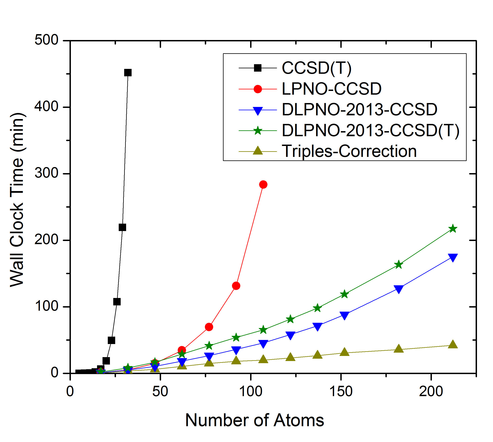
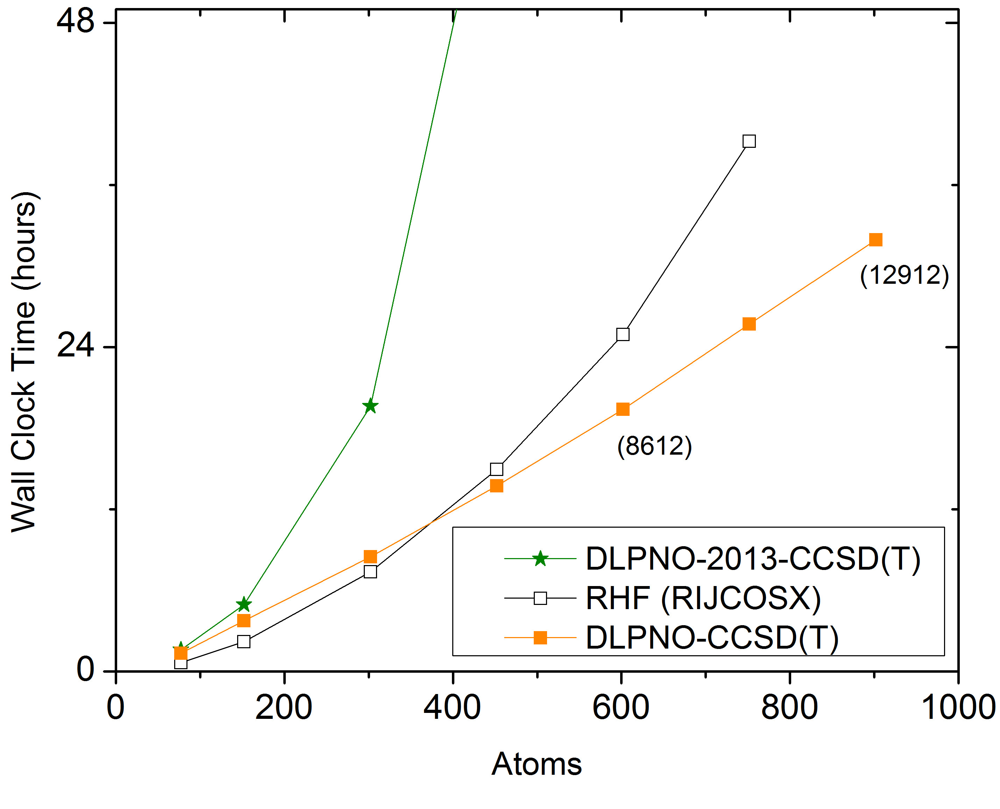

耦合簇与 CI 理论（Coupled Cluster and CI Theories, MDCI）¶
除二阶 Møller-Plesset 理论（MP2）外，
ORCA 还提供了多种单参考（single-reference）相关方法用于单点能计算（闭壳层情况下限制为 RHF 或 RKS 行列式，开壳层情况下为 UHF 或 UKS 行列式；
开壳层情况下也支持准限制轨道（quasi-restricted orbitals, QROs）neese2006am）。这些方法的计算量都相当大，但当参考行列式是展开多体波函数的良好起点时，可以用它们获得精确结果。这些方法实现在 orca_mdci 模块中，它是本节的主要主题。
'MDCI' 是 "matrix driven configuration interaction"（矩阵驱动组态相互作用）的缩写。这个术语相当技术化，旨在强调如果想高效实现这些方法（CCSD、QCISD 等），
就需要将它们写成矩阵运算的形式，而几乎每台计算机都能以峰值性能执行矩阵运算。
应当指出，近年来，许多高度相关的单参考方法及其性质通过自动代码生成添加到 ORCA 中，位于 orca_autoci 模块中，
该模块遵循类似的设计原则。krupicka2017ORCA_AGE,lechner2024code 让我们首先简要描述 ORCA 中已实现方法的理论背景。
理论¶
我们从完全 CI（full CI）层级出发，其中波函数展开为：
其中\(\left| 0 \right\rangle\) 是单行列式参考，S、D、T、Q、... 表示在自旋轨道层面上相对于该行列式的单激发、双激发、三激发、四激发和更高激发。像往常一样，标记\(i,j,k,l\) 指\(\left| 0 \right\rangle\) 中的占据轨道，\(a,b,c,d\) 指未占据的 MO，\(p,q,r,s\) 指一般的 MO。二次量子化激发算符\(a_{i}^{a} =a_{a}^{\dagger} a_{i}\) 对\(\left| 0 \right\rangle\) 的作用产生激发行列式\(\left| \Phi_i^a \right\rangle\)，它们以系数\(C_{a}^{i}\) 进入 \(\left| \Psi \right\rangle\)。变分方程为：
将三激发与单激发、五重激发等耦合起来的进一步方程。
总能量是参考能量 \(E_{0} =\left\langle {0\left| H \right|0} \right\rangle\) 与相关能 之和
这要求已知精确的单激发和双激发振幅。为了将级数截断到单激发和双激发，可以要么忽略右边包含更高激发的项（导致 CISD），要么近似它们的效应，从而失去 CI 方法的变分性质（CCSD、QCISD 和 CEPA 方法）。 将一体和二体激发算符定义为 \(\hat{{C} }_{1} =\sum\nolimits_{ia}{C_{a}^{i} a_{i}^{a} }\)， \(\hat{{C} }_{2} =\frac{1}{4}\sum\nolimits_{ijab}{C_{ab}^{ij} a_{ij}^{ab} }\)，就可以通过非连通项（disconnected terms）来近似三重和四重激发：
众所周知，CCSD 方程包含更多来自\(\hat{{C} }_{1}\) 算符各次幂的非连通贡献（如果坚持 CC 的逻辑，通常会把簇振幅标记为\(t_{a}^{i} ,t_{ab}^{ij}\)，...，把\(n\) 体簇算符标记为\(\hat{{T} }_{n}\)；这里我们采取 CI 的观点）。为了从 (Eq-Eq) 得到 CEPA 型方程，最清晰的做法是将单激发和 双激发重新标记为：内部指标（\(i\)）或（ij）用复合标记\(P\)， （\(a\)）或（ab）用\(x\)。于是近似如下：
这里第二行包含如下近似：只保留 Qy 或 Rz 等于 Px 的项（这破坏了幺正不变性），第四行包含如下近似：只考虑内部指标的"违反排除原理"（exclusion principle violating, EPV）项。记号\(Qy\cup Px\) 表示 "Qy 与 Px 的并"（包含公共的轨道指标），\(\varepsilon_{Q}\) 是对相关能（pair correlation energy）。EPV 项必须从相关能中减去，因为它们来自不可能的双重激发——由于已经从参考行列式的占据轨道激发出去或激发到空轨道中了。将方程 Eq 代入方程 Eq 后，\(C_{x}^{P} E_{C}\) 相消，实际上被"部分相关能"\(\sum\nolimits_{Q\cup P} { \varepsilon_{Q} }\) 所替代。
因此所得方程呈现出对角移动（"修饰"，dressed）后的 CISD 方程的形式\ \(\left\langle { \Phi_{P}^{x} \left|{ H-E_{0}+\Delta } \right|0+S+D} \right\rangle=0\)。如果避免上述第二个近似，就得到 Malrieu 的 (SC)\(^{2}\)-CISD。 parr1994density,ridley1973theor,bacon1979theor,zerner1980am,anderson1986inorg 否则，就得到带有如下移动的 CEPA/3：
CEPA/2 由\(-\Delta_{ab}^{ij} =\varepsilon_{ij}\) 得到，CEPA/1 是 CEPA/2 和 CEPA/3 的平均。正如 Ahlrichs 所指出的， ahlrichs1979comp 文献中关于单激发的适当移动似乎没有共识。如果像上面那样直接进行，就得到：
作为非连通三激发对单激发的适当影响。这里假设只有 \(\hat{{C} }_{1}\) 中的单激发\(\left|\Phi_i^a \right\rangle\) 对移动有贡献。如果\(\left| 0 \right\rangle\) 是 HF 行列式，在相同的 CEPA 近似下，由于 Brillouin 定理，非连通三激发在双激发投影中的影响消失。平均 CEPA模型是通过假设所有对相关能相等（除\(\varepsilon_{ii} =0\) 外）导出的。正如 Gdanitz 之前讨论的 gdanitz2001int，CEPA/1 的平均给出 \(\frac{2}{n}E_{\text{C} }\)，CEPA/3 给出 \(E_{\text{C} } \frac{4n-6}{n\left({ n-1} \right)}\)，其中\(n\) 是 相关电子数。这恰好分别是平均耦合对泛函（ACPF gdanitz1988chem）和 平均二次耦合簇（AQCC szalay1993chem）方法所用的移动。然而，对方程 Eq 的单激发移动求平均给出 \(\frac{4}{n}E_{\text{C} }\)。后者也是大\(n\) 时 AQCC 移动展开中的领头项。鉴于 ACPF 在某些情况下的不稳定性，Gdanitz 提出对单激发使用 AQCC 移动，对双激发使用原始的 ACPF 移动，并把他的新方法称为 ACPF/2 gdanitz1988chem。基于上面的论证，我们认为与 ACPF 方法最一致的做法是简单地使用\(\frac{4}{n}E_{\text{C} }\) 作为适当的单激发移动。我们称之为 NACPF。
不难证明，平均模型可以通过对修正的相关能泛函进行变分得到：
其中 g\(_{S}\) 和 g\(_{D}\) 是统计因子\(\frac{4}{n}\)、 \(\frac{2}{n}\)、\(\frac{4n-6}{n\left({ n-1} \right)}\)，视给定方法而定。因此，与 CEPA 模型不同，平均模型 满足驻定性原理并且是幺正不变的。然而，如果考虑定域的内部 MO，显然 等对能近似的有效性相当有限，对电子对进行更细致的处理是必要的。在保持驻定性原理的同时提供一种与 CEPA 方法非常相似的电子对处理方式，是 Ahlrichs 及其合作者通过发展 CPF 方法以巧妙的方式实现的 ahlrichs1985chem。在该方法中，相关能泛函写为：
其中
对\(P=\)(ij) 和\(Q=(kl)\) 的拓扑矩阵（topological matrix）选择为： kendall1997theor
其中\(n_{i}\) 是参考行列式中轨道\(i\) 中的电子数。从轨道\(i\) 出发的单激发在形式上等同于\(P=(ii)\)。在自旋轨道层面上，\(n_{i} =1\)，对于闭壳层\(n_{i} =2\)。在\(\Delta_{P} =\sum\nolimits_Q { T_{PQ}\varepsilon_{Q} }\) 中使用相同的拓扑矩阵，就得到方程 Eq 中双激发的 CEPA/1 移动。通过适当调整\(T_{PQ}\) 矩阵，可以直截了当地得到其他 CEPA 模型的 CPF 等价形式。在我们的程序中，我们已经这样做了，下面我们将这些方法称为 CPF/1、CPF/2 和 CPF/3，与 CEPA 模型类比（CPF/1\(\equiv\)CPF）。事实上，正如 Ahlrichs 及其合作者所讨论的，对 CPF 泛函进行变分会得到与 CEPA 方程非常相似的方程，可以像简单修改 CISD 程序一样轻松实现。Ahlrichs 等人 认为 CEPA/1 和 CPF/1 的能量应该非常接近。我们独立证实了在大多数情况下，两种方法预测的总能量相差不到 0.1 mEh。
CPF 方法的另一种替代方案是 VCEPA 方法，它同样基于能量泛函的变分优化 kollmar2010mol。将变分原理应用于 VCEPA 泛函所得到的方程比 CPF 更接近 CEPA 方程，因此所得能量与相应的 CEPA 值实际上无法区分。VCEPA 变体 与 CEPA 和 CPF 类比，称为 VCEPA/1、VCEPA/2 和 VCEPA/3。还有一个严格尺寸广延（size extensive）的能量泛函（SEOI），它对占据和虚轨道子空间内的幺正变换是不变的 kollmar2011chem2（开壳层版本尚未实现）。
同样，一个稍微关键的问题涉及单激发。它们并不占相关能的很大一部分。然而， 单激发的大系数会导致不稳定和结果恶化。其次，线性响应性质高度依赖于单激发的有效能量，因此它们的均衡处理很重要。由于 CEPA 和 CPF 方法相当于向下移动单激发和双激发的对角能量，如果某个激发的有效能量接近甚至低于参考能量，预计会出现不稳定。在 CPF 方法中，这会表现为分母\(N_{P}\) 过小。CPF 分母过小的论点促使 Chong 和 Langhoff 提出了 MCPF 方法，它使用比\((N_{P}N_{Q})^{1/2}\) 稍微更精细的平均 chong1986chem。1 然而，他们的修改仅基于数值论据而非物理或数学推理。根据方程 Eq 和 NACPF 的表现，在我们看来，对于单激发应当使用 Ahlrichs 及其合作者提出的\(T_{PQ}\) 的两倍。拓扑矩阵\(T_{PQ}\) 对于（非常轻微地）修改后的方法（我们称之为 NCPF/1）按如下方式修改：
（注意对于这种选择\(T_{PQ} \ne T_{QP}\)）。因此，基于对 CEPA 近似的分析，单激发对双激发的影响被设为零，单激发对单激发的影响也被设为零。这是一个明智的选择，因为两个单激发的乘积是双激发，已经包含在 SD 空间中，因此它们都不能属于外部空间。将关于单激发的这种推理应用到 CEPA 版本以及 NCPF/2 和 NCPF/3 也是很直接的。
通过使用相关适应轨道（correlation-adapted orbitals）代替 Hartree-Fock 轨道从而消除单激发，可以避免上述耦合对方法中使用单激发所带来的歧义。有两种选择：(a) Brueckner 轨道和 (b) 通过对电子能量关于轨道进行变分优化得到的优化轨道。这两种方法都已用于耦合簇双激发（CCD）方法 scuseria1987chem,handy1989chem，后来被扩展到耦合对方法 kollmar2010theor。对于 CCD，轨道优化需要求解所谓的\(\Lambda\) （或 Z 向量）方程 salter1989chem。不过，还有一种更廉价的替代方案，用简单的解析公式近似 Z 向量 kollmar2011chem1。
此外，Huntington 和 Nooijen 的参数化耦合簇（pCCSD）方法 huntington2010chem，将耦合对型方法的精度（对于能量和能量差通常优于 CCSD）与耦合簇方法更高的稳定性相结合，是一个有吸引力的替代方案。全面的数值测试 huntingtonsubmitted 表明，特别是
pCCSD(-1,1,1)（或 pCCSD/1a）和 pCCSD (-1.5,1,1)（或 pCCSD/2a）在精确计算热化学方面具有巨大潜力。这些方法可以通过在输入第一行添加"简单"关键词 pCCSD/1a 或
pCCSD/2a 来使用。如第 mdci.localcorrelation 节所述，pCCSD/1a 方法的 DLPNO
变体也可通过简单关键词 DLPNO-pCCSD/1a 用于 RHF 和 UHF
参考。
闭壳层方程¶
从自旋轨道过渡到闭壳层行列式的空间轨道，就得到了本文实际使用的工作方程。Saebo、 Meyer 和 Pulay 利用了生成态形式体系（generator state formalism）来得到 CISD 问题的一组高效方程 pulay1984chem。Werner 及其合作者讨论了 CCSD 和 QCISD 情况下类似的一组矩阵表述方程 hampel1992chem，MOLPRO 的实现被广泛认为特别高效。CISD 和 CCSD 方法的等价显式方程由 Scuseria 等人 发表 scuseria1988chem。2 残差"向量"\(\sigma\) 的双激发方程为（\(i\leq slant j\)，所有\(a,b\)）：
单激发方程为：
适用以下定义：
双电子积分以 (11|12) 记号书写，F 是 闭壳层 Fock 算符，F\(^{V}\) 是它的虚子块。 我们不假设 Brillouin 定理成立。振幅 \(C_{a}^{i} ,\,C_{ab}^{ij}\) 在适当的地方被收集成向量\(\mathrm{C }^{i}\) 和矩阵\(\mathrm{C }^{ij}\)。 移动\(\Delta^{i}\) 和\(\Delta^{ij}\) 依赖于所用的方法，在表 tab:7 中为 ORCA 中实现的每种 方法给出了定义。
本章讨论的各种单激发和双激发方法中所用对角移动的汇总。量\(\varepsilon_i\) 和\(\varepsilon_{ij}\) 分别是由单激发和双激发带来的相关能增量。CPF 型方法的部分分母\(N_i\) 和\(N_{ij}\) 在方程 Eq 中给出。
| *方法* | 双激发移动 | 单激发移动 |
|---|---|---|
| CISD | \(E_{\text{C} }\) | \(E_{C }\) |
| CEPA/0 | 0 | 0 |
| CEPA/1 | \(\frac{1}{2}(\varepsilon_{i} +\varepsilon_{j} )+\frac{1}{4}\sum\limits_k { (\varepsilon_{ik} +\varepsilon_{jk} ) }\) | \(\frac{1}{2}\varepsilon_{ii} +\frac{1}{2}\sum\limits_k { \varepsilon_{ik} }\) |
| CEPA/2 | \(\delta_{ij} \varepsilon_{i} +\varepsilon_{ij}\) | \(\varepsilon_{i} +\varepsilon_{ii}\) |
| CEPA/3 | \((\varepsilon_{i} +\varepsilon_{j} )-\delta_{ij} \varepsilon_{i} -\varepsilon_{ij} +\frac{1}{2}\sum\limits_k { (\varepsilon_{ik} +\varepsilon_{jk} ) }\) | \(\varepsilon_{i} +\sum\limits_k { \varepsilon_{ik} }\) |
| NCEPA/1 | \(\frac{1}{4}\sum\limits_k { (\varepsilon_{ik} +\varepsilon_{jk} ) }\) | \(\varepsilon_{ii} +\sum\limits_k { \varepsilon_{ik} }\) |
| NCEPA/2 | \(\varepsilon_{ij}\) | \(2\varepsilon_{ii}\) |
| NCEPA/3 | \(-\varepsilon_{ij} +\frac{1}{2}\sum\limits_k { (\varepsilon_{ik} +\varepsilon_{jk} ) }\) | \(2\sum\limits_k { \varepsilon_{ik} }\) |
| CPF/1 | \(N_{ij} \left\{{ \frac{1}{2}(\frac{\varepsilon_{i} }{N_{i} }+\frac{\varepsilon_{j} }{N_{j} })+\frac{1}{4}\sum\limits_k { (\frac{\varepsilon_{ik} }{N_{ik} }+\frac{\varepsilon_{jk} }{N_{jk} }) } } \right\}\) | \(N_{i} \left\{{ \frac{1}{2}\frac{\varepsilon_{ii} }{N_{ii} }+\frac{1}{2}\sum\limits_k { \frac{\varepsilon_{ik} }{N_{ik} } } } \right\}\) |
| CPF/2 | \(N_{ij} \left\{{ \delta_{ij} \frac{\varepsilon_{i} }{N_{i} }+\frac{\varepsilon_{ij} }{N_{ij} } } \right\}\) | \(N_{i} \left\{{ \frac{\varepsilon_{i} }{N_{i} }+\frac{\varepsilon_{ii} }{N_{ii} } } \right\}\) |
| CPF/3 | \(N_{ij} \left\{{ \frac{\varepsilon_{i} }{N_{i} }\left({ 1-\delta_{ij} } \right)+\frac{\varepsilon_{j} }{N_{j} }-\frac{\varepsilon_{ij} }{N_{ij} }+\frac{1}{2}\sum\limits_k { (\frac{\varepsilon_{ik} }{N_{ik} }+\frac{\varepsilon_{jk} }{N_{jk} }) } } \right\}\) | \(N_{i} \left\{{ \frac{\varepsilon_{i} }{N_{i} }+\sum\limits_k { \frac{\varepsilon_{ik} }{N_{ik} } } } \right\}\) |
| NCPF/1 | \(\frac{1}{4}N_{ij} \sum\limits_k { (\frac{\varepsilon_{ik} }{N_{ik} }+\frac{\varepsilon_{jk} }{N_{jk} }) }\) | \(N_{i} \left\{{ \frac{\varepsilon_{ii} }{N_{ii} }+\sum\limits_k { \frac{\varepsilon_{ik} }{N_{ik} } } } \right\}\) |
| NCPF/2 | \(N_{ij} \frac{\varepsilon_{ij} }{N_{ij} }\) | \(2N_{i} \frac{\varepsilon_{ii} }{N_{ii} }\) |
| NCPF/3 | \(N_{ij} \left\{{ -\frac{\varepsilon_{ij} }{N_{ij} }+\frac{1}{2}\sum\limits_k { (\frac{\varepsilon_{ik} }{N_{ik} }+\frac{\varepsilon_{jk} }{N_{jk} }) } } \right\}\) | \(2N_{i} \sum\limits_k { \frac{\varepsilon_{ik} }{N_{ik} } }\) |
| ACPF | \(\frac{2}{n}E_{\text{C} }\) | \(\frac{2}{n}E_{\text{C} }\) |
| ACPF/2 | \(\frac{2}{n}E_{\text{C} }\) | \(\left[{ 1-\frac{(n-3)(n-2) }{n(n-1) }} \right]E_{\text{C} }\) |
| NACPF | \(\frac{2}{n}E_{\text{C} }\) | \(\frac{4}{n}E_{\text{C} }\) |
| AQCC | \(\left[{ 1-\frac{(n-3)(n-2) }{n(n-1) }} \right]E_{\text{C} }\) | \(\left[{ 1-\frac{(n-3)(n-2) }{n(n-1) }} \right]E_{\text{C} }\) |
QCISD 方法需要一些轻微的修改。我们发现最方便的做法是把非线性项的影响看作对方程 Eq 和 Eq 中出现的积分的"修饰"（dressing）。这种 观点接近 Heully 和 Malrieu 最近的论证，甚至可能为激发态的计算以及连通三重激发的引入开辟有趣的新途径。heully2006mol 修饰后的积分为：
CCSD 方法可以用类似方式写出，但需要 15 个附加项，我们不在这里记录。它们可以方便地从我们关于 LPNO-CCSD 方法的论文中获取 neese2009chem。
在从自旋轨道过渡到空间轨道时，移动的定义是一个稍微微妙的问题。例如， CEPA/2 移动在生成态形式体系中变为：
（\(\tilde{{\Phi } }_{ij}^{ab}\) 是逆变组态状态函数，参见 Pulay 等人 salter1989chem。平行和 反平行自旋对能为：
这种表述将保持基于轨道和基于自旋轨道的代码之间的精确等价性。只有在（不现实的）平行和反平行对相关能相等的情况下，才会出现 tab:7 中的 CEPA/2 移动。然而，我们发现无法为 CPF 方法保持同样的等价性，因为生成态形式体系定义的电子对是平行和反平行自旋对的组合。为了保持最大程度的内部一致性，我们因此决定遵循 Ahlrichs 及其合作者的提议，在方程 Eq 中使用拓扑矩阵\(T_{PQ}\)，并在我们编程的 CEPA 和 CPF 方法中使用其等价形式。
开壳层方程¶
我们使用了三种自旋情形（\(\alpha \alpha\)、 \(\beta \beta\)、\(\alpha \beta\)）的非冗余集合，其双激发振幅被分别优化。自旋非限制形式体系中的方程可以直接从相应的自旋轨道方程通过积分掉自旋得到。为了实现非限制的 QCISD 和 CCSD 方法，我们采用了与自旋限制情况相同的策略（修饰积分）。所得方程相当繁琐，不在这里显式展示 hansen2011chem。
请注意，自旋非限制 CEPA 移动的定义与上面描述的自旋限制形式体系中的定义不同（参见 Kollmar 等人 hansen2011chem）。因此，除了 CEPA/1 和 VCEPA/1（当然还有 CEPA/0）——对于它们移动的自旋适配可以一致地完成——之外，闭壳层分子的 CEPA 计算在自旋限制和自旋非限制版本中会给出略为不同的能量。由于变体 1 在各种 CEPA 变体中也是最精确的 neese2009acc，我们推荐对耦合对型计算使用变体 1。对于变体 2 和 3， 涉及闭壳层和开壳层分子的反应，其反应能应仅使用自旋非限制版本计算。
开壳层相关方法的一个微妙问题是参考行列式的选择 neese2011biol。单参考相关 方法只有在参考行列式已经对体系电子结构提供良好描述时才能给出可靠结果。 然而，UHF 参考波函数会遭受自旋污染（spin-contamination），这会破坏结果并导致收敛问题。如果使用准限制轨道（QROs），就可以避免这一点 neese2006am,heully2006mol，因为相应的零阶 波函数是\(\hat{{S} }^{2}\) 算符的本征函数， 因此不会出现严重的自旋污染。耦合对和 耦合簇方程仍将在自旋非限制形式体系中求解，但能量会比使用自旋极化 UHF 参考行列式得到的结果略高。此外， 特别是对于更困难的体系（例如过渡金属配合物），使用 Kohn-Sham（KS）轨道 代替 HF 轨道通常更有利。
基本用法¶
orca_mdci 中的耦合簇和 CI 方法可用于 RHF 和 UHF
参考。实现相当高效，适合大规模计算。该模块最基本的用法相当简单。
! METHOD
# where METHOD is:
# CCSD CCSD(T) QCISD QCISD(T) CPF/n NCPF/n CEPA/n NCEPA/n
# (n=1,2,3 for all variants) ACPF NACPF AQCC CISD
! AOX-METHOD
# computes contributions from integrals with 3- and 4-external
# labels directly from AO integrals that are pre-stored in a
# packed format suitable for efficient processing
! AO-METHOD
# computes contributions from integrals with 3- and 4-external
# labels directly from AO integrals. Can be done for integral
# direct and conventional runs. In particular, the conventional
# calculations can be very efficient
! MO-METHOD (this is the default)
# performs a full four index integral transformation. This is
# also often a good choice
! RI-METHOD
# selects the RI approximation for all integrals. Rarely advisable
! RI34-METHOD
# selects the RI approximation for the integrals with 3- and 4-
# external labels
#
# The module has many additional options that are documented
# later in the manual.
! RCSinglesFock
! RIJKSinglesFock
! NoRCSinglesFock
! NoRIJKSinglesFock
# Keywords to select the way the so-called singles Fock calculation
# is evaluated. The first two keywords turn on, the second two turn off
# RIJCOSX or RIJK, respectively.
注意
- MDCI 模块中应用与 MP2 相同的 FrozenCore 选项。
- 从 ORCA 4.2 起，开壳层 CCSD(T) 中会考虑一个附加项，称为"四阶 双激发-三激发校正"。要重现以前的结果，应使用关键词，
这些方法的计算量很高——所有方法都是 O(N\(^6\))，如果要计算三激发校正则是 O(N\(^7\) （基于非限制行列式的计算大约比闭壳层计算贵 3 倍， 如果要计算三重激发则大约贵 6 倍）。这在一定程度上限制了计算规模：在目前可用的 PC 上，300--400 个基函数是可行的，如果你有耐心并将其推到极限，也许能达到 500--600；如果关联的电子不太多，也许甚至能达到 800--900 个基函数（使用 AO 直接方法时）。
提示
-
对于小分子和大基组的计算，MO-METHOD 选项通常是最高效的；大概到 300 个基函数左右。对于积分常规（integral conventional）运行，AO-METHOD 甚至可能更高效。
-
对于大型计算（>300 个基函数），AO-METHOD 选项是一个好选择。然而，如果你使用收缩非常深的基组（如 ANO），这些计算应在积分 常规模式下运行。
-
AOX-METHOD 通常比 MO-METHOD 或 AO-METHOD 稍微低效一些。
-
RI-METHOD 很少是最高效的选择。如果积分 变换时间是个问题，你可以选择
%mdci trafotype trafo_ri，或者选择 RI-METHOD 然后%mdci kcopt kc_ao。 -
关于 singles Fock 关键词（RCSinglesFock 等），程序 通常会决定用哪种方法来求值 singles Fock 项。关于该项的性质以及 与其求值相关的选项的更多细节，参见 mdci.SF。
为了更具体地说明这一点，考虑一个用 cc-pVDZ 基组对丝氨酸的计算——这是一个处于适合高度相关计算的基组范围低端的基组。求解方程所需的时间列在 tab:2 中。我们可以得出以下结论：
-
只要能够存储积分并且计算机的 I/O 系统不是瓶颈，进行耦合簇型计算的最高效方式通常是通过完整变换（它标度为 O(N\(^5\))，而后面的步骤分别标度为 O(N\(^6\)) 和 O(N\(^7\))）。
-
基于 AO 的耦合簇计算并不逊色多少。对于更大的基组（即当虚轨道与占据轨道 的比例更大时），基于 AO 的实现的计算时间会更有利。AO 直接方法使用的 磁盘空间少得多。然而，当你使用非常昂贵的基组时，开销会比这个 示例中观察到的更大。因此，常规存储的积分——如果负担得起—— 是一个好选择。
-
基于 AOX 的计算运行速度与基于 AO 的计算基本相同。由于基于 AOX 的计算需要 4 倍的磁盘空间，它们基本已经过时，AOX 实现 只是因历史原因而保留。
-
基于 RI 的耦合簇方法明显更慢。虽然能节省一些磁盘空间，但计算占主导的步骤执行效率较低。
-
CCSD 最多比 QCISD 贵 10%。有了最新的 AO 实现，繁琐的耦合簇项得到了高效处理。
-
CEPA 最多比 CCSD 快 20%。在许多情况下 CEPA 结果会比 CCSD 更好，那么与最严格的 CCSD(T) 相比它就是真正的节省。
-
如果包括三重激发，MO 与基于 AO 的实现之间适用与 CCSD 情况基本相同的评论。
ORCA 在这类计算中相当高效，但也很清楚，只要使用正则 MO，这些严格方法的应用范围就是有限的。ORCA 实现了所谓的局域耦合簇方法的新变体，可以在线性标度时间内计算大型的 真实分子。这将在第 mdci.localcorrelation 节中讨论。
求解丝氨酸（cc-pVDZ 基组）耦合簇/耦合对方程的计算时间（分钟）
| 方法 | SCFMode | 时间（分钟） |
|---|---|---|
| MO-CCSD | Conv |
38.2 |
| AO-CCSD | Conv |
47.5 |
| AO-CCSD | Direct |
50.8 |
| AOX-CCSD | Conv |
48.7 |
| RI-CCSD | Conv |
64.3 |
| AO-QCISD | Conv |
44.8 |
| AO-CEPA/1 | Conv |
40.5 |
| MO-CCSD(T) | Conv |
147.0 |
| AO-CCSD(T) | Conv |
156.7 |
所有这些方法都是为在 Hartree-Fock 行列式主导波函数的体系中覆盖动态相关而设计的。 这些方法中最没有吸引力的是 CISD，它不是尺寸一致的，因此实际上毫无用处。最严格的是 CCSD(T) 和 QCISD(T)。前者或许更可取，因为它在困难情况下更稳定。3 从这样的计算中可以得到高精度的结果。然而，只有与大基组结合才能获得这种精度。用双 zeta 基组进行 CCSD(T) 计算或许意义不大（参见 tab:3）。获得有意义结果所需的最低基组质量大概是 def2-TZVP(-f) 之类的，最好 def2-TZVPP（cc-pVTZ、 ano-pVTZ）。要获得精确结果，需要四重 zeta 甚至更大的基组，在这个阶段该方法就局限于相当小的体系了。
让我们来看 N\(_2\) 分子的势能面这个例子。我们用三种不同的基组研究它：TZVP、TZVPP 和 QZVP。输入如下：
! METHOD
# where METHOD is:
# CCSD CCSD(T) QCISD QCISD(T) CPF/n NCPF/n CEPA/n NCEPA/n
# (n=1,2,3 for all variants) ACPF NACPF AQCC CISD
! AOX-METHOD
# computes contributions from integrals with 3- and 4-external
# labels directly from AO integrals that are pre-stored in a
# packed format suitable for efficient processing
! AO-METHOD
# computes contributions from integrals with 3- and 4-external
# labels directly from AO integrals. Can be done for integral
# direct and conventional runs. In particular, the conventional
# calculations can be very efficient
! MO-METHOD (this is the default)
# performs a full four index integral transformation. This is
# also often a good choice
! RI-METHOD
# selects the RI approximation for all integrals. Rarely advisable
! RI34-METHOD
# selects the RI approximation for the integrals with 3- and 4-
# external labels
#
# The module has many additional options that are documented
# later in the manual.
! RCSinglesFock
! RIJKSinglesFock
! NoRCSinglesFock
! NoRIJKSinglesFock
# Keywords to select the way the so-called singles Fock calculation
# is evaluated. The first two keywords turn on, the second two turn off
# RIJCOSX or RIJK, respectively.
为了获得更高的精度，我们需要引入相对论效应，并且——特别是——打开芯层相关。4
用耦合簇方法计算的 N2 光谱常数。
| *方法* | 基组 | \(\mathrm{R}_e\) (pm)-\(\omega_{e }\) (cm\(^{-1 }\)) | \(\omega_{e }\) x\(_{e\, }\)(cm\(^{-1 }\)) |
|---|---|---|---|
| CCSD(T) | SVP | 111.2 | 2397 |
| — | TZVP | 110.5 | 2354 |
| — | TZVPP | 110.2 | 2349 |
| — | QZVP | 110.0 | 2357 |
| — | ano-pVDZ | 111.3 | 2320 |
| — | ano-pVTZ | 110.5 | 2337 |
| — | ano-pVQZ | 110.1 | 2351 |
| *CCSD* | QZVP | 109.3 | 2437 |
| *Exp* | 109.7 | 2358.57 | 14.32 |
从 tab:3 可以看出，要获得高精度——特别是对于振动频率——需要同时具备连通 三重激发和大基组（TZVP 的结果是碰巧好）。虽然这是一个孤立的例子，但这个结论更普遍地成立。如果推到极限，CCSD(T) 的精度（对于行为合理的体系）大约是键长 0.2 pm、谐振频率 <10 cm\(^{-1}\)、原子化能几个 kcal/mol。5 令人惊讶的是 Ahlrichs 基组在这些计算中表现得多么好——甚至比精心设计的 ANO 基组还稍好一点。
注意
某个给定的计算并非因为它带有"耦合簇"标签就总是高质量的。精确结果只有与大基组结合、并且对于 HF 近似是良好零阶起点的体系才能获得。
冻核选项¶
在耦合簇计算中，默认应用冻核（Frozen Core, FC）近似。这意味着芯层电子不被包含在相关处理中，因为包含芯层电子的动态相关通常对相对能量的影响微不足道。
冻核选项可以在简单输入中用 ! FrozenCore 或
! NoFrozenCore 打开或关闭。更多信息和更多
选项见第 essentialelements.frozencore 节和第
mdci.dlpnocorepno 节。
singles Fock 项¶
在大多数 MDCI 计算中，有一个中间量非常类似于 SCF Fock 矩阵，并且有类似的高效计算方法。下面简要讨论所谓的 singles Fock 项，在闭壳层情况下其形式为
singles Fock 矩阵可以通过从原子轨道（AO）基组中 的对应量（\(G(t_1)_{\mu\nu}\)）变换得到
其中
是 singles Fock 情况下 SCF 密度矩阵的类似物。对于 singles Coulomb（\(J(t_1)_{\mu\nu}\)）情况，密度可以对称化 （\(\tilde{P}(t_1)_{\kappa\tau}=P(t_1)_{\kappa\tau}+P(t_1)_{\tau\kappa}\)）， 并且可以使用恒等分解（resolution of identity）近似
其中\(A, B\) 是 RI/DF 辅助拟合基组的元素。注意 (Eq) 中的因子 2 由对称化来处理。由于我们使用对称密度，可以像 SCF 情况下那样使用相同的高效例程来 求值 singles Coulomb 项， 参见 ri.rij 和 ri.splitrij。 对于交换项（\(K(t_1)_{\mu\nu}\)），一种可能是 使用 COSX 近似 （参见 ri.rijcosx）
COSX 例程也能够处理非对称密度，因此这里可以像 SCF 情况下一样使用它。 另一种可能是对交换使用 RI（RIK），
其中
\(\tilde{j}\) 是使用\(C(t_1)\) 变换后的"轨道"。 使用这些近似，总的 singles Fock 项有两种近似：由简单关键词 RCSinglesFock 调用的 RIJCOSX 和由 RIJKSinglesFock 调用的 RIJK，参见 mdci.moduleuse。对于正则和 LPNO 方法，默认程序选择 SCF 计算中使用的相同近似。DLPNO2013 默认使用 RIJCOSX，而在 DLPNO 中，singles Fock 项也通过 SinglesFockUsePNOs 使用 PNO 求值， 参见 mdci.localcorrelation。这种行为也可以通过 method 块中的关键词来更改。
耦合簇密度¶
如果你主要习惯于 Hartree-Fock 或 DFT 计算，密度矩阵的计算或多或少是 trivial 的，并且与自洽场方程的求解一起自动完成。不幸的是，在耦合簇理论中情况并非如此（MP2 理论中也不是）。根本原因在于，在耦合簇理论中，期望值中指数\(e^{\hat T}\) 的展开
只有在耗尽所有可能的激发能级时才终止，即 如果参考行列式\(\Psi _0\)（通常是 HF 行列式）中的所有电子都从占据轨道空间激发到 虚轨道空间（这里\(D_{pq}^{}\) 表示一阶密度矩阵，\(E_p^q\) 是自旋迹二次量子化轨道替换 算符，\(\hat T\) 是簇算符）。因此，直接应用这些方程代价太高。不过， 可以展开指数并只保留 线性项。这定义了一个线性化密度，它与从线性化耦合簇 理论（CEPA/0）计算的密度一致。与 CEPA/0 密度的差别在于求值时使用的是收敛的 耦合簇振幅。这个密度很容易计算，求值的计算量 很低。因此，这是在耦合簇运行中可以轻松产生的密度。然而，它并不是 耦合簇专家们认可的密度。 耦合簇理论中密度这一主题是从响应理论的观点来处理的。设想向哈密顿量添加如下形式的微扰
那么总是可以将总能量的一阶导数写成如下形式：
这是一个很好的结果。量\(D_{pq}^{\text{(response)}}\) 就是 所谓的响应密度（response density）。在 CC 理论中能量不是通过对能量泛函进行变分优化得到的，因此 能量必须替换为如下拉格朗日量（Lagrangian）：
这里\(\langle \Phi_\eta |\) 表示任何激发行列式（单激发、双激发、三激发、...）。有两组拉格朗日乘子：量\(z_{ai}\) 通过使 Fock 矩阵的非对角块为零来保证受微扰的波函数 满足 Hartree-Fock 条件，量\(\lambda_{\eta}\) 保证 耦合簇关于振幅的投影方程 得到满足。如果两组条件都满足，那么 耦合簇拉格朗日量就简单地求值为耦合簇 能量。耦合簇拉格朗日量可以关于拉格朗日乘子\(z_{ai}\) 和\(\lambda_{\eta}\) 取驻定。响应密度 通过下式定义：
该方程中出现的密度\(D_{pq}\) 不具有从期望值产生的密度那样的性质。 例如，响应密度可以有低于 0 或大于 2 的本征值。然而在实践中，响应密度是耦合簇理论中最好的"密度"。 不幸的是，耦合簇响应密度的计算相当复杂，因为需要求解额外的方程组 来确定\(z_{ai}\) 和\(\lambda_{\eta}\)。如果只求解\(\lambda_{\eta}\) 的方程，就称为"非弛豫"（unrelaxed） 耦合簇密度。如果两组方程都求解，就 称为"弛豫"（relaxed）耦合簇密度。对于大多数用途， 弛豫密度中包含的轨道弛豫效应对耦合簇密度来说很小。之所以如此，是因为 耦合簇方程包含单激发算符的指数\(e^{\hat T_1} = \exp (\sum_{ai} t_a^iE_i^a)\)。这 带来了大部分轨道弛豫效应。事实上，用算符 \(\hat\kappa = \sum_{ai} \kappa_a^i(E_i^a - E_a^i)\) 替换\(\hat T_1\) 算符将提供全部的 轨道弛豫，从而导致"轨道优化 耦合簇理论"（OOCC）。 不出所料，确定系数\(\lambda_{\eta}\) 的方程（Lambda 方程）与耦合簇振幅方程本身一样复杂。因此，非弛豫耦合簇密度矩阵的计算大约是耦合簇能量计算的两倍贵（但 如果程序组织得当，项可以复用，而且 Lambda 方程是线性方程，比 非线性振幅方程收敛得稍好一些，因此并没有那么贵）。 ORCA 基于 Lambda 方程为闭壳层和开壳层体系提供非弛豫耦合簇密度 的计算。如果需要完全弛豫的耦合簇密度，ORCA 仍然 提供轨道优化耦合簇双激发方法（OOCCD）。这与完全弛豫的 CCSD 密度矩阵 并不完全等价，因为使用了算符\(\hat\kappa\) 而不是\(\hat T_1\)。然而， 结果非常接近，当预计轨道弛豫效应很大时，轨道优化耦合簇双激发是 首选方法。 就 ORCA 关键词而言，耦合簇密度通过以下关键词获得：
它将与 CCSD 或 QCISD 一起工作（在 OOCCD 情况下 QCISD 和 CCSD 是 相同的，因为没有单激发）。请注意，CCSD(T) 的非弛豫密度不可用。 除了在 mdci 块中使用密度选项 "orbopt" 外，OOCCD 也可以通过使用关键词来调用：静态相关与动态相关¶
让我们来看一个单参考相关方法的"滥用"，（非常表面地）研究一个单 HF 行列式无法很好描述的体系。这在 C\(_2\)H\(_4\) 双键的扭转中就已经发生了。在 90\(^{\circ}\) 扭转 角时，该体系表现得像双自由基，应当用多参考方法描述（参见第 modelchemistries.casscf 节） 沿 C\(_2\)H\(_4\) 扭转坐标的刚性扫描。插图 显示 CCSD 计算的 T\(_1\) 诊断量。 如 fig:1 所见，当接近 90\(^{\circ}\) 扭转角时能量急剧上升。HF 曲线实际上是不连续的，并且在 90\(^{\circ}\) 有一个尖点。一个简单的 CASSCF(2,2) 计算立即修复了这一点，给出光滑的势能面。 动态相关在 CASSCF(2,2) 方法之上用 MRACPF 方法处理如下：
这是这个问题的参考计算。可以看到 RHF 曲线远偏离 MRACPF 参考，但 CASSCF 计算 非常接近。因此，动态相关对这个问题并不重要！它看起来重要只是因为 RHF 行列式是一个很差的 选择。MP2 相关能不足以修复 RHF 结果。CCSD 方法更好但仍然达不到 定量精度。最后，CCSD(T) 曲线非常接近 MRACPF。这对于总能量也成立（fig:2 的插图），它们彼此 相差不超过 2--3 mEh。因此，在这种情况下，人们用强大的 CCSD(T) 方法以不恰当的方式来 描述一个具有多参考特征的体系。尽管如此，CCSD(T) 的成功表明该方法即使在棘手的 情况下也多么稳定。CCSD 和 CCSD(T) 的"警报"是所谓的 "T\(_1\)-诊断量"6，也显示在 fig:2 中。经验法则 是，当诊断量的值大于 0.02 时，结果 不可信。在这个计算中我们还没有完全达到 这个临界点，尽管 T\(_1\) 诊断量在 90\(^{\circ}\) 扭转附近 急剧上升。 沿扭转坐标 C\(_2\)H\(_4\) 的 CCSD(T) 和 MRACPF 总能量的比较。插图显示差值 E(MRACPF)-E(CCSD(T))。 计算成本（不考虑三重激发）是这样的：CCSD 方法最贵，其次是 QCISD （便宜约 10%）和所有其他方法（比 CCSD 便宜约 50% 到 两倍）。最精确的方法通常是 CCSD(T)。然而，如果省略三重激发，这就不那么清楚了，在这个范围内耦合对方法（特别是 CPF/1 和 NCPF/17）可以与 CCSD 竞争。 让我们从略微不同的视角来看同样的情况，解离 F\(_2\) 的单键。众所周知， RHF 近似对这个分子完全失效，预测它是 不成键的。同样我们使用了一个太小的基组来获得定量 结果，但足以说明原理。 我们首先用 MRACPF 方法生成一个"参考"势能面：1 structure (0 1) N 0 0 0
! TZVPP CCSD(T)
%paras R= 1.05,1.13,8
end
* xyz 0 1
N 0 0 0
N 0 0 {R}
*
注意我们从外向内扫描。这有助于程序找到 正确的势能面，因为在大距离下 \(\sigma\) 和\(\sigma^{\ast}\) 轨道能量接近，并落在 CASSCF 计算所需的\(2\times2\) 窗口内（参见 第 modelchemistries.casscf 节）。比较 MRACPF 和 CASSCF 曲线，很明显 MRACPF 过程引入的动态相关 非常重要，它将渐近线（粗略地说就是结合能）改变了几乎两倍 （参见 fig:3）。 在极小值附近（大约到 2.0 Å），CCSD(T) 和 MRACPF 曲线 吻合得非常好，几乎无法区分。超过这个距离， CCSD(T) 计算开始发散并表现出非物理 行为，而多参考方法能够描述整个 势能面直到解离极限。CCSD 曲线定性上还可以但 有明显的定量缺陷：它预测的极小值键长太短，解离能太高。因此， 即使对于这个相当"简单"的分子，连通 三重激发的效应也非常重要。鉴于这种（相当不愉快的） 情况，简单得多的 CEPA 方法的表现相当 令人满意，因为它预测的极小值和解离能比 CCSD 或 CASSCF 更接近参考 MRACPF 结果。看起来在这个特定情况下 CEPA/1 和 CEPA/2 预测了 正确的结果。 用一些单参考方法计算的 F\(_2\) 分子势能面并与 MRACPF 参考的比较。
相关计算的基组：ANO 的情况¶
在 HF 和 DFT 计算中，双电子排斥积分的生成和处理通常是 整个计算中最昂贵的步骤。因此，最高效的方法是使用 收缩松散、原函数尽可能少的基组—— Ahlrichs 基组（SVP、TZVP、TZVPP、QZVP、def2-TZVPP、def2-QZVPP）在这一方面 可能是最好的。另一种选择是 极化一致基组 pc-1 到 pc-4，但 它们只对 H-Ar 可用。对于大分子，这样的基组 也能带来高效的预筛选，从而带来高效的 计算。 在高度相关的计算（如 CCSD 和 CCSD(T)）中情况不同，其计算量随基函数数量 急剧增长。此外，计算通常只对 有限数量的基函数可行，并且经常在 积分常规模式下运行，因为存在高角动量基函数，这些函数不断重新计算代价很高。因此，关于基组设计的不同策略似乎是合乎逻辑的。最好使用尽可能少的基函数但使它们尽可能精确。这与原子 自然轨道（atomic natural orbital, ANO）基组的理念相容。这样的基组从 相关的原子计算生成，并为每个基组函数复制给定 角动量的原函数。因此，这些基组 收缩很深、代价高昂，但自然原子轨道构成了 分子计算的优美基础。ORCA 中包含了一组精确且系统的 ANO（ano-pV\(n\)Z，\(n=\) D、T、Q、5）。相关一致基组（cc-pV\(n\)Z，\(n=\) D、T、Q、5、6,...）的设计也基于相关的策略，它们除了"主" 轨道的最外层原函数和极化函数（这些保持非收缩）外也都是收缩的。 让我们用 H\(_2\)CO 分子在标准几何下详细研究这个主题，并用 各种基组计算 SCF 和相关能。在评判结果时，应当结合基函数数量和总 耗时来看待总能量。看下表中的数据，很明显，对于给定的基数（cardinal number）（双 zeta 为 2，三重 zeta 为 3，四重 zeta 为 4）， ANO 基组给出的 SCF 能量低得多。使用自 ORCA 2.7.0 起可用的特别优化的 ANO 积分， 计算甚至不比标准基组的贵多少。显然，ANO 基组提供的相关能也是所测试的 12 个基组中最好的。因此，ANO 基组是高度相关计算的很好选择。优势在 早期成员（DZ/TZ）中尤其大。
高度相关计算的各种基组比较
| 基函数数目 | E(SCF) | E\(_{C }\)(CCSD(T)) | E\(_{tot }\)(CCSD(T)) | 总时间 | |
|---|---|---|---|---|---|
| 基组 | 基函数数目 | E(SCF) | E\(_{C }\)(CCSD(T)) | E\(_{tot }\)(CCSD(T)) | 总时间 |
| cc-pVDZ | 38 | -113.876184 | -0.34117952 | -114.217364 | 2 |
| cc-pVTZ | 88 | -113.911871 | -0.42135475 | -114.333226 | 40 |
| cc-pVQZ | 170 | -113.920926 | -0.44760332 | -114.368529 | 695 |
| def2-SVP | 38 | -113.778427 | -0.34056109 | -114.118988 | 2 |
| def2-TZVPP | 90 | -113.917271 | -0.41990287 | -114.337174 | 46 |
| def2-QZVPP | 174 | -113.922738 | -0.44643753 | -114.369175 | 730 |
| pc-1 | 38 | -113.840092 | -0.33918253 | -114.179274 | 2 |
| pc-2 | 88 | -113.914256 | -0.41321906 | -114.327475 | 43 |
| pc-3 | 196 | -113.922543 | -0.44911659 | -114.371660 | 1176 |
| ano-pVDZ | 38 | -113.910571 | -0.35822337 | -114.268795 | 12 |
| ano-pVTZ | 88 | -113.920389 | -0.42772994 | -114.348119 | 113 |
| ano-pVQZ | 170 | -113.922788 | -0.44995355 | -114.372742 | 960 |
各种基组相对于 ano-pVQZ 基组的高度相关计算误差（Eh）。 让我们在 tab:5 中再看一个例子：用 MP2 方法计算的 N\(_2\) 分子优化结构随基组的变化（这些计算比较古老，来自 ano-pVnZ 基组尚不存在的时代。今天，ano-pVnZ 会是首选）。 这里最高质量的基组是 QZVP，它也给出最低的 总能量。然而，该基组包含直到 g 函数并且非常昂贵。不使用 g 函数和一组 f 函数（如 TZVPP 中那样）对 计算结果有明显影响，导致键长被 高估 0.2 pm——变化很小，但对于 这类基准计算仍然显著。缺少第二组 d 函数的 TZVP 基组在键长、结合能和电离 势上造成的误差出奇地小，尽管删除第二组 d 集"花费"的总能量超过 20 mEh（与 TZV(2d,2p) 相比），与更大的 TZVPP 相比更是如此。 较小的 DZP 型基组会在计算的 键长上产生 1--2 pm 量级的显著误差，这再次强调了这样的基组对于相关分子计算确实太小—— ANO-DZP 基组过于偏向原子，而"常规的"面向分子的 DZP 基组 （如 SVP）的 d 集是为覆盖极化而不是 相关而设计的（相关 d 函数比极化 d 函数更陡）。非常经济的 SVP 基组的表现应当被认为是很好的，而且（有点令人惊讶地）比 cc-pVDZ 稍好，尽管它给出的绝对能量更高。 看 MP2 层面计算的（未做 ZPE 校正的）结合能得到的图景基本相同—— 最大的基组 QZVP 给出最大的结合能，而较小的基组 低估了它。DZP 型基组的误差相当大 （\(\approx\) 2 eV），因此使用这样的基组时应当谨慎。
相关计算的各种基组比较。
| 112.2 | 9.67 | 14.45 | -109.1677 | |
|---|---|---|---|---|
| SVP | 112.2 | 9.67 | 14.45 | -109.1677 |
| cc-pVDZ | 112.9 | 9.35 | 14.35 | -109.2672 |
| TZVP | 111.5 | 10.41 | 14.37 | -109.3423 |
| TZV(2d,2p) | 111.4 | 10.61 | 14.49 | -109.3683 |
| TZVPP | 111.1 | 10.94 | 14.56 | -109.3973 |
| QZVP | 110.9 | 11.52 | 14.60 | -109.4389 |
耦合簇 S-诊断量¶
已经提出了若干用于耦合簇计算的诊断量，旨在指示"多参考"特征。 不幸的是，其中最广泛使用的是 "T1-诊断量"。我们 长期以来一直认为，T1-诊断量与多参考特征无关。 它衡量的是动态相关场中轨道弛豫的程度。虽然这是 Hartree-Fock 近似对给定体系工作好坏的一个 度量，但它直言不讳地不涉及 CC 波函数可能想要或不想要 模拟的多组态特征。关于我们认为什么是多参考 与单参考特征的讨论，请参阅 Izsak 等人的论文。 ORCA 有一个替代的耦合簇诊断量，称为 "S-诊断量"，由 Perdersen 等人引入。这个诊断量 确实衡量多参考特征。它可用于 正则 RHF 和 UHF CCSD，通过以下方式调用
相关论文：显式相关方法：F12-MP2 和 F12-CCSD(T)¶
在物理上可能比基组外推更令人满意的替代方案是显式相关（explicit correlation）理论。在该方法中， 向波函数拟设添加包含 电子间坐标显式形式的项（因此得名"显式 相关"）。最初这些项对电子间 距离是线性的（"R12-方法"）。然而后来发现，使用电子间距离的其他函数（如 指数函数）可以得到更好的结果（"F12-方法"）。众所周知，这些 方法结合更小的轨道基组就能为相关 能给出接近基组极限的结果。 在应用这些方法时，有几点很重要： - 特殊的轨道基组至少是有利的。这类基组 的开发仍处于起步阶段。对于有限范围的元素，基组 cc-pV\(n\)Z-F12 是 可用的（其中\(n=\) D、T、Q）并被推荐。请注意，与 名称所暗示的不同，这些基组比常规的 双 zeta、三重 zeta 或四重 zeta 基组要大不少 - 除轨道基组外，还必须指定一个近完全辅助基组 集。这就是所谓的 "CABS" 基组。对于上述 三个基组，它们称为 cc-pV\(n\)Z-F12-CABS。如果你有未被覆盖的元素， 你需要自己提供 CABS 基组。CABS 基组可以 以类似于 RI 辅助基组的方式读入 ORCA （在输入中将 "AUX" 替换为 "CABS"）。有自动工具 可以从任意轨道基组构建 CABS 基组，例如 AutoCABSsemidalas2022autocabs - 如果 RI 近似与 F12 结合使用，则需要第三个 基组——这可以是常规的辅助 "/C" 基组，但我们建议在辅助基组 集中提升一个级别（例如使用 cc-pVTZ/C 拟合基组结合 cc-pVDZ-F12） - 同时使用 RIJCOSX 或 RI-JK 是完全可行的。 在这种情况下，你应当为 Coulomb 拟合提供第四个基组 - RHF 和 UHF 可用，ROHF 不可用。（不过，可以使用 QROs 进行类似 ROHF 的计算） - 梯度不可用 进行显式相关 MP2 计算是简单的。例如看下面在给定几何下对水分子的计算：
与 RI 近似结合使用类似： 输出相对容易解释：-----------------
RI-MP2-F12 ENERGY
-----------------
EMP2 correlation Energy : -0.241038994909
F12 correction : -0.054735459470
-----------------
MP2 basis set limit estimate : -0.295774454379
Hartree-Fock energy : -76.057963800414
(2)_S CABS correction to EHF : -0.003475342535
-----------------
HF basis set limit estimate : -76.061439142949
MP2 total energy before F12 : -76.299002795323
Total F12 correction : -0.058210802005
-----------------
Final basis set limit MP2 estimate : -76.357213597328
#
# Correlation energies of the water molecule: extrapolation versus F12
#
# cc-pVDZ MP2: -0.201380894
# T : -0.261263141
# Q : -0.282661311
# T/Q : -0.298276192
# Q/5 : -0.300598282
# F12-DZ : -0.295775804
# RI-F12-DZ : -0.295933560 (cc-pVDZ/C)
# -0.295774489 (cc-pVTZ/C)
# F12-TZ : -0.299164006
# RI-F12-TZ : -0.299163478 (cc-pVQZ/C)
# F12-QZ : -0.300130086
# the keywords
! F12-CCSD(T) # or "!CCSD(T)-F12"
# optional parameter for the max. number of
# iterations in the CABS Singles iterations
%method
F12CABSSingles_MaxIter 100 # default
end
自动外推到基组极限¶
注意
- 此功能已弃用——它可能仍然可用，但我们 不再主动维护这部分代码。对于基组 外推，请使用相应的复合脚本。
如上一节所提到的，相关计算的最大问题之一是 到基组极限的收敛缓慢。 克服这个问题的一种可能性是使用显式 相关方法。另一种可能性是使用基组 外推技术。由于这涉及一些相当重复的 工作，一些过程被硬连线到 ORCA 程序中。到目前为止，只 支持能量。对于外推，需要一个系统的基组 系列。例如，cc-pV\(n\)Z、 aug-cc-pV\(n\)Z 或相应的 ANO 基组就提供了这样的系列。这里\(n\) 是 "基数"（cardinal number），双 zeta 基组为 2，三重 zeta 为 3，等等。 HF 能量到基组极限的收敛假定为：
这里\(E_{\mathrm{SCF} }^{(X) }\) 是用基数\(X\) 的 基组计算的 SCF 能量，\(E_{\mathrm{SCF} }^{(\in fty) }\) 是基组极限 SCF 能量，\(A\) 和\(\alpha\) 是常数。ORCA 中 采用的方法是做两点外推。这意味着 要么\(A\) 要么\(\alpha\) 必须已知。这里我们取\(A\) 为待定量，\(\alpha\) 为基组特定的常数。
相关能的收敛假定为：
\(\beta\) 的理论值是 3.0。然而，Truhlar 发现并被我们证实，对于 2/3 外推\(\beta = 2.4\) 表现得相当好。
对于若干基组，我们确定了\(\alpha\) 和\(\beta\) 的最优值neese2011jctc：
Note
| [\(\alpha_{23 }\)]{style="color: white"} | [\(\beta_{23 }\)]{style="color: white"} | [\(\alpha_{34 }\)]{style="color: white"} | [\(\beta_{34 }\)]{style="color: white"} | |
|---|---|---|---|---|
| cc-pVnZ | 4.42 | 2.46 | 5.46 | 3.05 |
| pc-n | 7.02 | 2.01 | 9.78 | 4.09 |
| def2 | 10.39 | 2.40 | 7.88 | 2.97 |
| ano-pVnZ | 5.41 | 2.43 | 4.48 | 2.97 |
| saug-ano-pVnZ | 5.48 | 2.21 | 4.18 | 2.83 |
| aug-ano-pVnZ | 5.12 | 2.41 |
由于 2/3 的\(\beta\) 值接近 2.4，我们总是取这个 值。同样，所有 3/4 及更高的外推都用 \(\beta=3\) 完成。然而，\(\alpha\) 的优化值在 整个过程中都被采用。
使用关键词 ! Extrapolate(X/Y,basis)，其中 X 和 Y 是
相应的连续基数，basis 是请求的基组
类型（= cc、aug-cc、cc-core、ano、saug-ano、
aug-ano、def2），ORCA 将用两个基组计算 SCF 以及可选的 MP2 或
MDCI 能量并分别外推。
该关键词也以如下方式工作：! Extrapolate(n,basis)
其中 n 是要使用的能量数量。这样程序
将从双 zeta 基组开始，用 n 个基数进行计算
然后对不同的基组
对外推。例如关键词 ! Extrapolate(3,CC) 将
用 cc-pVDZ、cc-pVTZ 和 cc-pVQZ 基组进行计算，
然后估计 cc-pVDZ/cc-pVTZ 和
cc-pVTZ/cc-pVQZ 组合的外推结果。
让我们以 B3LYP/TZVP 优化几何下 H2O 分子为例。参考值由使用去收缩 aug-cc-pV6Z 基组的 HF 计算确定，相关能由 cc-pV5Z/cc-pV6Z 外推得到。 结果是：
现在我们看看外推能带来什么：
注意：
-
RI-JK 和 RIJCOSX 近似与该 选项配合良好，RI-MP2 也是可能的。辅助基组会 自动选择，且不能更改。
-
所有其他基组选择、外部定义的基组等都将被 忽略——自动过程只适用于默认 基组！
-
带有 "core" 后缀的基组包含芯层相关 函数。默认假定这意味着芯层 电子也要被关联，冻核 近似被关闭。然而，这可以在 method 块中被覆盖，例如选择
%method frozencore fc_electrons end！ -
到目前为止，外推只对单点实现， 不适用于梯度。因此几何优化不能用 这种方式进行。
-
外推方法应当只与非常紧的 SCF 收敛判据一起使用。对于开壳层方法，建议 额外谨慎。
结果是：
Alpha(2/3) : 4.420 (SCF Extrapolation)
Beta(2/3) : 2.460 (correlation extrapolation)
SCF energy with basis cc-pVDZ: -76.026430944
SCF energy with basis cc-pVTZ: -76.056728252
Extrapolated CBS SCF energy (2/3) : -76.066581429 (-0.009853177)
MDCI energy with basis cc-pVDZ: -0.214591061
MDCI energy with basis cc-pVTZ: -0.275383015
Extrapolated CBS correlation energy (2/3) : -0.310905962 (-0.035522947)
Estimated CBS total energy (2/3) : -76.377487391
因此，总能量的误差确实大大减小。让我们 看看更严格的 3/4 外推：
Alpha(3/4) : 5.460 (SCF Extrapolation)
Beta(3/4) : 3.050 (correlation extrapolation)
SCF energy with basis cc-pVTZ: -76.056728252
SCF energy with basis cc-pVQZ: -76.064381269
Extrapolated CBS SCF energy (3/4) : -76.066687152 (-0.002305884)
MDCI energy with basis cc-pVTZ: -0.275383016
MDCI energy with basis cc-pVQZ: -0.295324345
Extrapolated CBS correlation energy (3/4) : -0.309520368 (-0.014196023)
Estimated CBS total energy (3/4) : -76.376207520
根据我们的经验，ANO 基组的外推与
cc-基组类似。因此用 Extrapolate(3,ANO) 重复整个计算给出：
对于 3/4 外推，这在估计的 CCSD(T) 基组极限能量的 1 mEh 以内， 对于 2/3 外推在 2 mEh 以内。
对于较大的分子，计算的瓶颈将是用较大基组的 CCSD(T) 计算。为避免这个 昂贵（或不可行的）计算，可以用如下方式估计 基组极限下的 CCSD(T) 能量：
这假定 MP2 和 CCSD(T) 的基组依赖性 相似。然后可以像之前一样外推。或者，标准 方式——Hobza 及其合作者广泛使用——是 简单地使用：
相应的关键词是：
#
# twisting the double bond of C2H4
#
! SV(P) def2-TZVP/C SmallPrint NoPop MRACPF
%casscf nel 2
norb 2
mult 1
nroots 1
TrafoStep RI
end
%mrci tsel 1e-10
tpre 1e-10
end
%method scanguess pmodel
end
%paras R= 1.3385
Alpha=0,180,18
end
* int 0 1
C 0 0 0 0 0 0
C 1 0 0 {R} 0 0
H 1 2 0 1.07 120 0
H 1 2 3 1.07 120 180
H 2 1 3 1.07 120 {Alpha}
H 2 1 3 1.07 120 {Alpha+180}
*
这产生如下输出：
Alpha : 5.410 (SCF Extrapolation)
Beta : 2.430 (correlation extrapolation)
SCF energy with basis ano-pVDZ: -76.059178452
SCF energy with basis ano-pVTZ: -76.064774379
Extrapolated CBS SCF energy : -76.065995735 (-0.001221356)
MP2 energy with basis ano-pVDZ: -0.219202871
MP2 energy with basis ano-pVTZ: -0.267058634
Extrapolated CBS correlation energy : -0.295568604 (-0.028509970)
CCSD(T) correlation energy with basis ano-pVDZ: -0.229478341
CCSD(T) - MP2 energy with basis ano-pVDZ: -0.010275470
Estimated CBS total energy : -76.371839809
估计的相关能并不差——距基组极限在 3 mEh 以内。
使用 ExtrapolateEP2(n/m,bas,[method, method-details]) 关键词
可以使用上述方法的推广，其中可以用任何可用的相关方法代替 MP2，如参考文献
liakos2012jphyschema 所述。method 是可选的，可以是 MP2 或
DLPNO-CCSD(T)，后者是默认的。如果方法是
DLPNO-CCSD(T)，在 method-details 选项中可以要求 LoosePNO、
NormalPNO 或 TightPNO。
这里 M 代表任何你想使用的相关方法。对于 前面的水分子，使用 DLPNO-CCSD(T)（现在是默认的）代替 MP2 的计算输入如下：
1 structure (0 1) F 0 0 0
! def2-SV def2-SVP/C MRACPF
%casscf nel 2
norb 2
nroots 1
mult 1
end
%mrci tsel 1e-10
tpre 1e-10
end
%paras R= 3.0,1.3,35
end
* xyz 0 1
F 0 0 0
F 0 0 {R}
*
它会产生如下输出：
Alpha : 4.420 (SCF Extrapolation)
Beta : 2.460 (correlation extrapolation)
SCF energy with basis cc-pVDZ: -76.026430944
SCF energy with basis cc-pVTZ: -76.056728252
Extrapolated CBS SCF energy : -76.066581429 (-0.009853177)
MDCI energy with basis cc-pVDZ: -0.214429497
MDCI energy with basis cc-pVTZ: -0.275299699
Extrapolated CBS correlation energy : -0.310868368 (-0.035568670)
CCSD(T) correlation energy with basis cc-pVDZ: -0.214548320
CCSD(T) - MDCI energy with basis cc-pVDZ: -0.000118824
Estimated CBS total energy : -76.377568621
距基组极限不到 2 mEh。最后 liakos2012jphyschema 表明，与其用基数\(X\) 和\(X+1\) 外推廉价方法 M，不如用基数\(X+1\) 和\(X+2\)。
这可以用
ExtrapolateEP3(bas,[method,method-details]) 关键词完成：
相应的输出是：
Alpha : 5.460 (SCF Extrapolation)
Beta : 3.050 (correlation extrapolation)
SCF energy with basis cc-pVDZ: -76.026430944
SCF energy with basis cc-pVTZ: -76.056728252
SCF energy with basis cc-pVQZ: -76.064381269
Extrapolated CBS SCF energy : -76.066687152 (-0.002305884)
MDCI energy with basis cc-pVDZ: -0.214429497
MDCI energy with basis cc-pVTZ: -0.275299699
MDCI energy with basis cc-pVQZ: -0.295229871
Extrapolated CBS correlation energy : -0.309417951 (-0.014188080)
CCSD(T) correlation energy with basis cc-pVDZ: -0.214548319
CCSD(T) - MDCI energy with basis cc-pVDZ: -0.000118822
Estimated CBS total energy : -76.376223926
对于 ExtrapolateEP2 和 ExtrapolateEP3 关键词，默认的廉价 方法是带 NormalPNO 阈值的 DLPNO-CCSD(T)。也 可用 MP2 以及带 LoosePNO 和 TightPNO 设置的 DLPNO-CCSD(T) 选项。
分子中的簇（Cluster in molecules, CIM）¶
分子中的簇（CIM）方法是 Li 及其合作者于 2002 年开发的线性标度局域 相关方法。CIM2002 最近 Li、Piecuch、Kállay 和其他课题组对其进行了进一步改进。CIM2006,CIM2009,CIM2011,CIM2014,CIM2018 CIM 受到 Förner 及其合作者早期开发的局域相关方法的启发。CIM1985 闭壳层 分子的总相关能可以视为每个占据 LMO 相关能 之和。
对于每个占据 LMO，它只与其附近的占据 LMO 和虚 MO 相关联。为了重现每个占据 LMO 的相关能，相关计算中只需要占据和虚 LMO 的一个子集。无需对整个分子进行相关计算，所有 LMO 的相关能可以在 各个子系统中获得。
ORCA 中实现的 CIM 方法遵循 Guo 及其合作者提出的算法并做了一些改进。CIM2014,CIM2018 1. 为避免实空间截断，使用微分重叠积分 （DOI）代替距离阈值。CIM 方法中只有一个参数 'CIMTHRESH'，控制 CIM 子系统的构建。如果 LMO i 和 LMO j 之间的 DOI 大于 CIMTHRESH，LMO j 将被包含到 i 的 MO 域中。通过 包含 i 的所有附近 LMO，可以为 MO i 构建一个子系统。CIMTHRESH 的默认值是 0.001。如果需要精确结果， 必须使用更紧的 CIMTHRESH。
- 从 ORCA 4.1 起，LMO i 与 i 的 MO 域之外的 LMO 之间的被忽略相关也被考虑。这些弱 相关通过偶极矩积分近似求值。 有了这个校正，三维蛋白质的 CIM 结果 显著改善。约 99.8% 的相关能被 恢复。
CIM 可以为子系统计算调用不同的单参考相关方法。在 ORCA 中，CIM-RI-MP2、CIM-CCSD(T)、 CIM-DLPNO-MP2 和 CIM-DLPNO-CCSD(T) 方法可用。CIM-RI-MP2 和 CIM-DLPNO-CCSD(T) 已被证明是计算包含数千原子的大分子相关能的非常高效和精确的 方法。CIM2018\ ORCA 中 CIM 的使用很简单。对于 CIM-RI-MP2，
#
# CIM-RI-MP2 calculation
#
! RI-MP2 cc-pVDZ cc-pVDZ/C CIM
%CIM
CIMTHRESH 0.0005 # Default value is 0.001
end
* xyzfile 0 1 CIM.xyz
对于 CIM-DLPNO-CCSD(T)，
CIM 的并行效率已显著 提高。CIM2018 除少数域构建子步骤外， CIM 算法可以达到非常高的并行效率。从 ORCA 4.1 起， 由于并行化策略，并行版本不再支持 Windows 平台。CIM 从 闭壳层到开壳层（多参考）的推广也将在不久的 将来实现。
局域相关（DLPNO）¶
ORCA 具有极其强大的"基于域的局域对自然轨道"（domain-based local pair natural orbital）近似（DLPNO），riplinger2013dlpno-ccsd 它是"局域对自然轨道"拟设（LPNO）的扩展。neese2009chem,neese2009acc,neese2009lpno-cepa,hansen2011chem 这些方法旨在提供尽可能接近 正则耦合簇结果的结果，同时通过一系列良好受控的近似获得数量级的 效率提升。事实上， 在这样的计算中通常能恢复约 99.8% 到 99.9% 的正则相关能。 更高的精度是可以达到的，但 最终代价要高得多。默认 截断的设置使得绝大多数化学上有意义的 能量差相对于 相同基组的正则结果重现到优于 1 kcal/mol。
从 ORCA 6.0 起，LPNO 变体不再 受支持，因为它们涉及一些高阶标度步骤（高达\(N^5\)），而 DLPNO 是线性标度且精度相当。LPNO-CCSD 和 DLPNO-CCSD 的比较见 fig:DLPNOCCSD。很明显 DLPNO-CCSD（几乎） 从不比 LPNO-CCSD 慢。然而，它真正的优势 在大约 60 个原子以上的分子中最为明显。三激发校正 （我们 2013 年的第二篇论文中添加的） 显示出完美的线性标度，如 fig:DLPNOCCSD 的 (a) 部分所示。对于大体系，它在 DLPNO-CCSD 计算时间上增加约 10%--20%，因此对于所有 仍能获得后者结果的体系都可以添加它。自 2016 年起， 整个 DLPNO-CCSD(T) 算法是线性标度的。与 DLPNO2013-CCSD(T) 相比， 线性标度算法的改进从 约 300 个原子的体系大小开始变得 显著，如 fig:DLPNOCCSD 的 (b) 部分所示。
AB


a) 正则 CCSD、LPNO-CCSD 和 DLPNO2013-CCSD(T) 方法的标度行为。很明显只有 DLPNO2013-CCSD 和 DLPNO2013-CCSD(T) 可以 应用于大分子。DLPNO2013-CCSD 相对于 LPNO-CCSD 的优势在体系达到约 60 个原子之前 并不显现。 b) DLPNO2013-CCSD(T)、DLPNO-CCSD(T) 和使用 RIJCOSX 的 RHF 的标度行为。很明显只有 DLPNO-CCSD(T) 可以 应用于真正的大分子，它比 DLPNO2013 版本更快，甚至在约 400 个原子处与 RHF 有交叉。
使用 DLPNO-CCSD(T) 方法，首次（2013 年） 有可能对整个蛋白质 （Crambin，超过 650 个原子，fig:DLPNOCrambin）进行 CCSD(T) 水平的计算。用 DLPNO2013-CCSD(T) 在一个 CPU 上用双 zeta 基组的计算大约需要 4 周， 用 DLPNO-CCSD(T) 只需约 4 天即可完成。用 DLPNO-CCSD(T) 甚至三重 zeta 基组计算也能在 合理时间内完成，在 4 个 CPU 上需要 2 周。
Crambin 蛋白质的结构——第一个用 CCSD(T) 水平从头算 方法处理的蛋白质
重要的是要理解 LPNO 和 DLPNO 实现 与 RI 近似紧密相连。因此，在这些 计算中必须指定拟合基组。与 RI-MP2 相同的规则适用：为 MP2 优化的辅助基组对于 PNO 计算就 很好。你可以为 同一任务指定多个辅助基组，程序会正确处理。
LPNO 和 DLPNO 方法的理论在 文献中的许多原创研究 论文中有详尽描述：
-
F. Neese, A. Hansen, D. G. Liakos: Efficient and accurate local approximations to the coupled-cluster singles and doubles method using a truncated pair natural orbital basis.neese2009chem
-
F. Neese, A. Hansen, F. Wennmohs, S. Grimme: Accurate Theoretical Chemistry with Coupled Electron Pair Models.neese2009acc
-
F. Neese, F. Wennmohs, A. Hansen: Efficient and accurate local approximations to coupled electron pair approaches. An attempt to revive the pair-natural orbital method.neese2009lpno-cepa
-
D. G. Liakos, A. Hansen, F. Neese: Weak molecular interactions studied with parallel implementations of the local pair natural orbital coupled pair and coupled-cluster methods.liakos2011openshell-pno
-
A. Hansen, D. G. Liakos, F. Neese: Efficient and accurate local single reference correlation methods for high-spin open-shell molecules using pair natural orbitals.hansen2011chem
-
C. Riplinger, F. Neese: An efficient and near linear scaling pair natural orbital based local coupled-cluster method.riplinger2013dlpno-ccsd
-
C. Riplinger, B. Sandhoefer, A. Hansen, F. Neese: Natural triple excitations in local coupled-cluster calculations with pair natural orbitals.riplinger2013dlpno-t
-
C. Riplinger, P. Pinski, U. Becker, E. F. Valeev, F. Neese: Sparse maps - A systematic infrastructure for reduced-scaling electronic structure methods. II. Linear scaling domain based pair natural orbital coupled cluster theory.riplinger2016ldlpno-ccsd-t
-
D. Datta, S. Kossmann, F. Neese: Analytic energy derivatives for the calculation of the first-order molecular properties using the domain-based local pair-natural orbital coupled-cluster theorydatta2016dlpno-ccsd-lambda
-
M. Saitow, U. Becker, C. Riplinger, E. F. Valeev, F. Neese: A new linear scaling, efficient and accurate, open-shell domain based pair natural orbital coupled cluster singles and doubles theory.saitow2016odlpno-ccsd
-
Y. Guo, C. Riplinger, U. Becker, D.G. Liakos, Y. Minenkov, L. Cavallo, and F. Neese: An improved linear scaling perturbative triples correction for the domain based local pair-natural orbital based singles and doubles coupled cluster method (DLPNO-CCSD(T)).Guo_DLPNO(T1)_2018
因此，这里只需指出这些方法的几个重要设计 原则和特性：
-
任何分子的相关能可以写成电子对相关能 之和，由参考行列式中占据的 轨道对的内部指标（\(ij\)）标记。如果轨道（\(i\)）和（\(j\)）是 定域的，对相关能\(\epsilon_{ij}\) 随距离衰减 非常快，通常每隔一个化学键就衰减约一个数量 级。因此，通过对合理的对 相关能估计使用合适的截断，许多电子对可以从 高水平处理中移除，只有线性标度数量的 电子对会对 相关能做出显著贡献。
-
对相关能的自然估计来自 二阶多体微扰理论（MP2）。然而，正则 MP2 以分子大小的五次幂标度，因此从理论和计算 角度来看并不真正有吸引力。由于小的前置因子，RI-MP2 在 提供合理的廉价对相关能估计方面走了很远。 然而，如果使用定域内部轨道，那么 MP2 能量表达式必须写成线性方程的形式。另一方面， 如果使用正则虚轨道与定域 内部轨道，并忽略来自纯 内部 Fock 矩阵元 F(\(i\),\(k\)) 和 F(\(k\),\(j\)) 的耦合项，那么就 得到一个不错的近似，在 ORCA 中称为"半正则 MP2"（semi-canonical MP2）。它在较旧的 LPNO 方法中用作初始猜测。对于 DLPNO，这个方法也没有吸引力。
-
在 DLPNO 中，初始猜测更精细。这里虚空间 由投影原子轨道（PAO）张成，这些 PAO 被分配到 与每个局域内部 轨道（\(i\)）相关联的原子域，以及对于电子对（\(ij\)） 是两个这样的域（\(i\)）和（\(j\)）的并集。如果应用半局域 近似，就得到对 半正则 MP2 能量的极好近似。这称为"半局域" 近似（semi-local approximation），它在计算量方面是线性标度的。如果将这些方程迭代到 自洽以消除耦合项 F(\(i\),\(k\)) 和 F(\(k\),\(j\))，就得到完整的局域 MP2 方法（LMP2 或 L-MP2）。通过使域足够大，结果以任意精度逼近 正则 MP2 能量，同时在计算资源方面仍是 线性标度的。该方法 是 DLPNO 方法的默认方法。
-
基本上，DLPNO 的高自旋开壳层版本使用 与闭壳层变体相同的策略来高效生成 与闭壳层 形式体系一致的开壳层 PNO。通过 UHF-LPNO-CCSD 方法的开发，我们 认识到使用非限制 MP2（UMP2）方法来定义 开壳层 PNO 会引入一些复杂性：(1)\(\beta\) 自旋轨道的 PNO 不能为\(\alpha\)-\(\alpha\) 电子对定义，反之亦然；(2) 单占据 轨道的对角 PNO 不能正确定义；(3) 在闭壳层极限下 PNO 空间 不会与闭壳层 LPNO 框架中的 相同。然而，要在 LPNO 基组中编程所有非限制 CCSD 项，这些 PNO 肯定是必要的。 因此，在 UHF-LPNO-CCSD 实现中，若干项 （在许多情况下对 相关能的贡献相当小）被省略。由于这些事实， UHF-LPNO-CCSD 在闭壳层极限下给出的结果与 RHF-LPNO-CCSD 不完全相同。此外，基于 半正则 UMP2 对能的弱对筛选 在某些情况下导致闭壳层和 开壳层态处理的不太平衡，反应能中的误差较大。为克服这些问题，在高自旋 开壳层 DLPNO-CCSD 方法中，PNO 在半正则 NEVPT2 框架中生成，该框架在闭壳层极限下平滑收敛到 RHF-MP2 对应物。从 ORCA 4.0 起可用的开壳层 DLPNO-CCSD 包含完整 的开壳层 CCSD 方程集，被设计为 RHF-DLPNO-CCSD 的自然 扩展。
-
根据截断参数 （在 ORCA 中称为\(T_\mathrm{CutPairs}\)）筛选电子对 不足以获得高性能的局域电子结构方法。Pulay 的原始工作建议将从 内部轨道（\(i\)）和（\(j\)）出发的激发限制到与 对（\(ij\)）相关联的域。虽然这工作良好并且多年来已被 Werner、Schütz 及其合作者 完美实现，WernerSchuetzCCSD,WernerSchuetzT,schutz2003linear,schutz2002new 但 这类计算的前置因子很高，因为域必须 选得足够大以恢复 99.9% 或更多的正则 相关能。
-
ORCA 开发者因此转向了 1970 年代初由 Meyer、 Kutzelnigg、Staemmler 及其合作者以高度成功使用的方法，即 "对自然轨道"（pair natural orbitals, PNO）方法。meyer1971ionization,ahlrichs1975pno,meyer1973pno,werner1976pno
如 Loewdin 在 1955 年的开创性 论文中所示，自然轨道（一粒子密度矩阵的 本征函数）提供了相关波函数相对于 虚空间中包含的单粒子函数数量 最快的收敛。已有充分证据表明近似自然轨道在这方面 几乎与真实自然轨道（需要 精确波函数的知识）一样成功。 虽然使用整个体系近似自然轨道的多 粒子体系近似相关处理的成功 有一定局限，但对自然轨道 并非如此。后者最初由 England 及其合作者建议作为 相关计算的基组，当时 被称为"伪自然轨道"（pseudonatural orbitals），这个术语 在 Meyer 的开创性工作中一直被使用。 -
PNO 是给定电子对的近似自然轨道。 为了生成它们，需要一个单粒子对密度 矩阵\(D_{ij}\)，其本征函数就是 PNO 本身， 而相应的本征值是 PNO 占据数。 虽然有许多创造性的可能性可以导致 略有不同的 PNO 集，但一个相当有用和自然的 近似是从 MP2 振幅以期望值的方式生成这样的密度（"非弛豫" MP2 密度）。然后使用 第二个阈值（在 ORCA 中为\(T_\mathrm{CutPNO}\)）来控制 要包含在计算中的 PNO。占据 数\(< T_\mathrm{CutPNO}\) 的 PNO 被忽略。
-
给定电子对的 PNO 形成正交归一集合。然而， 属于不同电子对的 PNO 不是正交归一的， 因此它们相互重叠。这种非正交性导致的复杂情况出奇地少，因为 PNO 保持与所有占据 轨道正交。在实践中，基于 PNO 的相关 计算的方程几乎不比正则方程更复杂。
-
这些对密度的一个很好的特性是当对相互作用变小时它们变小。因此弱对 由很少的 PNO 关联。因此，波函数的 PNO 展开 极其紧凑，只有线性标度 数量的重要激发振幅需要 考虑。
-
PNO 的一个很棒的特性是它们对 所要描述的相关情况是"自适应"的。因此， 它们像物理所要求的那样离域，并且对其空间位置 没有特别的假设。然而， 很清楚 PNO 位于它们所关联的 内部轨道的同一空间区域，因为否则它们 不会对相关能有贡献。
-
在迭代局域 MP2 中，首先使用截断
TCutPNO×LMP2ScaleTCutPNO从半正则振幅为 MP2 计算一组 PNO。所得 PNO 空间的大小应与 DLPNO-MP2 相当。迭代收敛后，在（较大的）PNO 基组中从迭代的局域 MP2 振幅 生成用于 CCSD 双激发 振幅的（较小的）PNO 集。单激发 振幅的 PNO 总是使用半正则 MP2 振幅计算，因为它们需要保守得多的 PNO 截断 阈值。 -
利用这一特性，可以定义宽裕的域并将 PNO 用这些域中包含的 PAO 和辅助拟合函数 （用于 RI 近似）展开。在 ORCA 中，这由第三个重要截断参数 \(T_\mathrm{CutMKN}\) 控制。这是 DLPNO 方法的基础。在 较旧的 LPNO 方法中，PNO 用正则 虚轨道展开，\(T_\mathrm{CutMKN}\) 仅用于对 PNO 的局域 拟合。在 DLPNO 线性标度实现中，用 PAO 展开 PNO 的域通过 \(T_\mathrm{CutDO}\) 控制。
-
PNO 展开有一个惊人的优势：随着基组接近完备性，PNO 收敛到 一个定义良好的集合。因此，随着轨道基组的扩大，每个电子对的 PNO 数量 增加很小。换句话说， 大基组的相关计算并不比小基组的相关计算 贵多少。因此，PNO 相对于正则计算的优势随 基组的大小而增加。这是一个很棒的特性，因为大而 灵活的基组是有意义的相关 计算的必要条件。
-
总之，DLPNO 和 LPNO 计算仅由三个 具有明确含义的截断参数控制：a) \(T_\mathrm{CutPairs}\)，包含在耦合对或耦合簇迭代中的电子对的 截断；b) \(T_\mathrm{CutPNO}\)，控制给定电子对保留多少 PNO；c)\(T_\mathrm{CutMKN}\)，控制 PNO 展开的域有多大。对于 线性标度的 DLPNO 计算，域大小通过 \(T_\mathrm{CutDO}\) 控制。
-
很清楚，由于截断，结果中引入了一定的误差。 然而，有了 LMP2 结果， 可以补偿来自 \(T_\mathrm{CutPairs}\) 和\(T_\mathrm{CutPNO}\) 的误差。这在 ORCA 中 已经完成，该校正被添加到最终相关能中，从而 使其非常接近（达到 mEh 精度或更好）正则 结果。\(T_\mathrm{CutMKN}\) 最好通过保守设置来处理（在 1e\(-\)3 到 1e\(-\)4 时 域大约 20--30 个原子大，足以进行精确处理）。
-
注意 LPNO 和 DLPNO 方法不引入任何实 空间截断。我们避免这样做，并坚持在方法 开发中使所有截断基于波函数或 能量参数。我们认为这是最无偏的方法， 它不涉及"化学直觉"或"偏见"的元素。
-
在 DLPNO 方法中，一个高效的筛选机制在起作用。在该方法中，首先获得对相关能的（二次 标度的）多极估计，计算极其 快（即使对整个蛋白质也只有几秒钟）。 只有当这个估计足够大时，给定电子对才会被 考虑进行 LMP2 处理。通常，能量 贡献为 1e\(-\)6 Eh 及更小的对用 偶极-偶极估计描述得很好。具体来说，我们丢弃 估计能量\(< 0.01 \times T_\mathrm{CutPairs}\) 的 对，并将它们的多极能量和加到最终相关能中。 这些校正往往极小，即使对于大 分子也对能量不显著。然而， 重要的是，多极估计确保 MP2 处理中的线性标度。未通过对 预筛选的对在 ORCA 或 DLPNO 意义上被称为"弱对"（weak pairs）。它们在三激发 校正的计算中仍然起作用。
-
三激发贡献的计算更复杂， 并且没有微扰估计可用，因为 (T) 贡献本身就是微扰的。虽然 (T) 贡献比 CCSD 相关能小得多，但各种局域和 PNO 近似引入的 误差可能很显著。我们发现必须包含至少 有一个对是"弱"LMP2 对（带其 LMP2 振幅）的三激发， 才能得到足够精确的结果。
基本用法¶
DLPNO 方法的使用很简单，用户几乎不需要 特别关注：
# Local Pair Natural Orbital Test
! cc-pVTZ cc-pVTZ/C DLPNO-CCSD TightSCF
%maxcore 2000
# these are the default values - they need not to be touched!
%mdci TCutPNO 3.33e-7 # cutoff for PNO occupation numbers. This
# is the main truncation parameter
TCutPairs 1e-4 # cut-off for estimated pair correlation energies.
# This exploits the locality in the internal space
TCutMKN 1e-3 # this is a technical parameter here that controls
# the domain size for the local fit to the PNOs.
# It is conservative.
end
* xyz 0 1
... (coordinates)
*
LPNO 方法过去以与其正则变体严格类比的方式运行。 事实上，不应将 LPNO 方法视为新的模型化学——它们旨在重现 正则结果，包括 BSSE。这与基于域的局域相关方法不同，后者确实构成了一种新的模型化学， 其性质与原始方法不同。
在某些情况下，调整计算的精度可能是合适的。合理的默认值已通过大量 基准计算确定，可通过简单输入行中的 LoosePNO、NormalPNO 和 TightPNO 关键词访问。liakos2015pno-defaults
这些关键词代表控制 DLPNO 计算精度的推荐方式，如下所示。在指定这些关键词之外手动更改阈值通常是不推荐的。
# Tight settings for increased accuracy, e.g. when investigating
# weak interactions or conformational equilibria
! cc-pVTZ cc-pVTZ/C DLPNO-CCSD(T) TightPNO TightSCF
# OR: Default settings (no need to give NormalPNO explicitly)
# Useful for general thermochemistry
! cc-pVTZ cc-pVTZ/C DLPNO-CCSD(T) NormalPNO TightSCF
# OR: Loose settings for rapid estimates
! cc-pVTZ cc-pVTZ/C DLPNO-CCSD(T) LoosePNO TightSCF
%maxcore 2000
* xyz 0 1
... (coordinates)
*
自 ORCA 4.0 起，参考文献 riplinger2016ldlpno-ccsd-t 中描述的线性标度 DLPNO 实现是默认的 DLPNO 算法。 然而，为了比较，参考文献 riplinger2013dlpno-ccsd 和 riplinger2013dlpno-t 中的第一个 DLPNO 实现仍然可以 通过使用 DLPNO2013 前缀而不是 DLPNO- 前缀来调用。
# DLPNO-CCSD(T) calculation using the 2013 implementation
! cc-pVTZ cc-pVTZ/C DLPNO2013-CCSD(T)
# DLPNO-CCSD(T) calculation using the linear-scaling implementation
! cc-pVTZ cc-pVTZ/C DLPNO-CCSD(T)
* xyz 0 1
... (coordinates)
*
直到 ORCA 4.0，在 DLPNO-CCSD 的微扰三激发校正中使用"半正则"近似。人们发现"半正则"近似对大多数 体系是一个非常好的近似。然而，"半正则"近似在罕见情况下（特别是当 HOMO-LUMO 间隙很小时） 可能引入大误差，而 DLPNO-CCSD 仍然非常 精确。为了提高微扰三激发校正的精度， 从 4.1 起，提供了改进的 DLPNO-CCSD 微扰三激发校正 DLPNO-CCSD(T1)Guo_DLPNO(T1)_2018。在 DLPNO-CCSD(T1) 中，三激发 振幅是迭代计算的，可以更精确地重现 正则 (T) 能量。
有必要澄清 ORCA 输入文件中使用的命名法。调用"半正则"微扰三激发校正 近似的关键词是 DLPNO-CCSD(T)。而改进的迭代 近似的关键词是 DLPNO-CCSD(T1)。然而，在我们最近的 论文Guo_DLPNO(T1)_2018 中，"半正则"微扰 三激发校正近似被命名为 DLPNO-CCSD(T0)，而改进的迭代版本称为 DLPNO-CCSD(T)。因此，论文中使用的 名称与 ORCA 输入文件中的不同。下面给出为 DLPNO-CCSD 进行改进的迭代微扰三激发校正的示例输入 文件，
# DLPNO-CCSD(T1) calculation using the iterative triples correction
! cc-pVTZ cc-pVTZ/C DLPNO-CCSD(T1)
%mdci
TNOSCALES 10.0 #TNO truncation scale for strong triples,
# TNOSCALES*TCutTNO. Default setting is 10.0
TNOSCALEW 100.0 #TNO truncation scale for weak triples,
# TNOSCALEW*TCutTNO Default setting is 100.0
TriTolE 1e-4 #(T) energy convergence tolerance
# Default setting is 1e-4
%end
* xyz 0 1
... (coordinates)
*
自 ORCA 4.2 起，开壳层 DLPNO-CCSD 的改进迭代微扰三激发校正 也可用。开壳层 DLPNO-CCSD(T) 的关键词与闭壳层情况的相同。
自 ORCA 4.0 起，DLPNO-CISD/QCISD/CCSD 实现的高自旋开壳层版本已在 与 2016 版 RHF-DLPNO-CCSD 代码相同的机制上提供。目前的 UHF-DLPNO-CCSD 被设计为 UHF-LPNO-CCSD 的 继承者，并作为 RHF-DLPNO-CCSD 的自然扩展。UHF-LPNO 与新开发的 UHF-DLPNO 方法之间的显著 差异是 UHF-DLPNO 方法在应用于闭壳层物种时给出与 RHF 变体相同的结果，而 UHF-LPNO 则不然。该程序的使用非常简单，如下所示：
# (1) In case of ROHF reference
! ROHF DLPNO-CCSD def2-TZVPP def2-TZVPP/C TightSCF TightPNO
# (2) In case of UHF reference, the QROs are constructed first and used for
# the open-shell DLPNO-CCSD computations
! UHF DLPNO-CCSD def2-TZVPP def2-TZVPP/C TightSCF TightPNO
# (3) In case that UKS is specified, the QROs are constructed first and used as
# "unconverged" UHF orbitals for the open-shell DLPNO-CCSD computations.
# This approach is useful when the converged UHF wavefunction is qualitatively
# wrong but the UKS wavefunction is not
! UKS CAM-B3LYP DLPNO-CCSD def2-TZVPP def2-TZVPP/C TightSCF TightPNO
注意
DLPNO-CISD/QCISD/CCSD 方法专门用于闭壳层和 高自旋开壳层物种，不适用于自旋极化体系（例如开壳层 单重态或反铁磁耦合的过渡金属团簇）。 在开壳层单重态 UHF/UKS 波函数上进行 DLPNO-CISD/QCISD/CCSD 计算将给出类似相应闭壳层 单重态计算的结果，因为 DLPNO 计算将在由 QRO 轨道组成的 闭壳层行列式上进行。类似地，开壳层单重态以外的自旋极化体系的计算可能给出定性 错误的结果。这里，UHF-LPNO-CCSD 方法或 DLPNO-NEVPT2 是更好的选择。
与闭壳层 DLPNO-CCSD 相同的截断参数集 也用于开壳层 DLPNO。开壳层 DLPNO-CCSD 产生超过 99.9\(\%\) 的正则 CCSD 相关能，与 闭壳层变体一样。UHF-DLPNO-CCSD 和 RIJCOSX-UHF 对于三重态线性烷烃链的计算 时间见 fig:Scaling。
RIJCOSX-UHF 和 UHF-DLPNO-CCSD 对于三重态线性 烷烃链（\(C_{n}H_{\text{2n + 2}}\)）的计算时间，使用 def2-TZVPP 基组和默认冻核设置。在单个集群 节点上使用 4 个 CPU 核心和 128 GB 内存。
虽然这些体系对于 DLPNO 方法的最佳表现来说有些理想化，但很明显，前面的 RIJCOSX-UHF 是 大例子总计算时间中的决速步。在开壳层 DLPNO 实现中，SOMO 不仅 包含在占据空间中，也包含在前面的积分变换步骤中的 PNO 空间中。这意味着更多的 SOMO 可能导致更苛刻的 PNO 积分变换和 DLPNO-CCSD 迭代。示例包括三重态的 [NiFe] 氢化酶活性位点 模型和高自旋态的释氧复合物（OEC），分别如 图 7{reference-type="ref" reference="fig:DLPNOHydro"} 和 8{reference-type="ref" reference="fig:DLPNOOEC"} 所示。用 def2-TZVPP 基组和 NormalPNO 设置，在 [NiFe] 氢化酶 （fig:DLPNOHydro）上的单点计算 使用 Xeon E5-2670 的 4 个 CPU 核心在单个 集群节点上大约需要 45 小时。 用相同计算设置对 OEC 化合物（fig:DLPNOOEC）的 单点计算在 44 小时内完成，尽管该体系中的 AO 数量甚至比氢化酶还少：氢化酶活性位点模型和 OEC 分别涉及 4007 和 2606 个 AO 基组 函数。如果体系 拥有超过十个 SOMO，应特别小心，因为包含更多 SOMO 可能 急剧增加计算的前置因子。此外，如果 SOMO 分布在整个分子骨架上，每个对 域可能根本无法截断；这种情况下域截断带来的加速 根本无法实现。
[NiFe] 氢化酶中第二配位层的 Ni-Fe 活性中心。整个模型体系由 180 个原子组成。
光系统 II 中 S\({}_2\) 态 OEC 的模型化合物， 由 238 个原子组成。在其高自旋态，OEC 总共有 13 个 SOMO。
闭壳层 DLPNO-CCSD 的轨道非弛豫密度计算已经实现。这允许 一阶性质（如多极矩或电场 梯度）的解析计算。为了以高精度重现常规非弛豫 CCSD 性质， 可能需要比默认设置更紧的阈值。推荐阅读 参考文献datta2016dlpno-ccsd-lambda。非弛豫密度的计算按通常方式请求：
关于（D）LPNO 方法有几点要注意：
-
DLPNO 和 LPNO 方法必须使用 RI 近似。 因此必须提供相关拟合集。
-
DLPNO-CCSD(T) 方法适用于闭壳层或高自旋 开壳层物种。在开壳层物种上进行 DLPNO 计算时， 最好有 UCO 选项：如果前面的 SCF 收敛到破缺对称解，不能保证 DLPNO-CCSD 给出物理上有意义的结果。
-
DLPNO 方法的开壳层版本使用与 LPNO 变体不同的 策略来定义开壳层 PNO。这 确保了与开壳层 LPNO 不同，在闭壳层极限下 PNO 空间收敛到 闭壳层对应物。因此， 在闭壳层极限下，开壳层 DLPNO 给出的 相关能与 RHF 变体至少到小数点后第三位 相同。称为 (T) 的微扰三激发校正也可用于开壳层物种。
-
在由 QROs 构建的 Slater 行列式上使用 正则/DLPNO 方法对开壳层物种进行计算时，应特别注意 这些 QROs 的轨道能量。在某些情况下，最高 SOMO 的轨道能量 似乎高于最低 VMO 的。类似地，最高 DOMO 的轨道能量可能 高于最低 SOMO 的。在这些情况下， CEPA/QCISD/CCSD 迭代可能收敛困难。在最坏的情况下，它直接发散。在这种情况下很可能， 必须怀疑电荷和多重度是否正确。如果它们是 正确的，你可能需要更好的起始轨道和一点运气！除了仔细选择起始轨道（特别是当默认 HF 轨道有定性缺陷（包括但不限于严重的自旋污染）时可以使用 DFT 轨道代替）之外，改变
%mdci块中的 最大 DIIS 展开空间大小（MaxDIIS）和能级移动 （LShift）可能在一定程度上缓解收敛问题。 -
DLPNO-CCSD(T)-F12 和 DLPNO-CCSD(T1)-F12（迭代三激发）在 闭壳层和开壳层情况下都可用。这些方法 在 DLPNO-CCSD(T) 相关能计算之上采用微扰 F12 校正。代码的 F12 部分使用与正则 RI-F12 方法 相同精神的 RI 近似（参见第 mdci.expcorrelation 节）。 因此，它们应当与对 CC 和 F12 部分都使用 RI 近似的方法比较。F12 校正只占计算 DLPNO-CCSD(T)-F12 相关能 所需总时间（不包括 SCF）的一小部分（通常 10-30%）。 因此，F12 校正的标度与母体 DLPNO 方法相同（线性或近线性）。此外，F12 过程 不引入新的截断参数， 保持了 DLPNO 方法的黑箱性质。F12D 近似强烈推荐，因为它 比涉及双重 RI 求和的 F12 方法计算上更便宜。关键词：DLPNO-CCSD(T)-F12D、 DLPNO-CCSD(T)-F12、DLPNO-CCSD(T1)-F12D、DLPNO-CCSD(T1)-F12、 DLPNO-CCSD-F12D、DLPNO-CCSD-F12。
-
有三个用户可控的阈值，都可以 在 %mdci 块中调整：(a)\(T_\text{CutPNO}\hspace{-0.25mm}\) 控制 每个电子对的 PNO 数量。这是最关键 的参数，默认值为\(3.33\times 10^{-7}\)。(b) \(T_\text{CutPairs}\hspace{-0.25mm}\) 控制重要对的微扰筛选，默认值为\(10^{-4}\)。(c)\(T_\text{CutMKN}\hspace{-0.25mm}\) 是 技术参数，控制每个电子对拟合集的大小。 默认值为\(10^{-3}\)。所有这些 默认值都是保守的。因此不需要调整这些 参数。所有 DLPNO-CCSD 截断都绑定到 这三个截断参数，几乎不应触碰 （因此它们也没有被记录 :)）。
-
需要时调整精度的首选方式是使用 "LoosePNO/NormalPNO/TightPNO" 关键词。此外，"TightPNO" 触发 MP2 初始猜测中的完全迭代（DLPNO-MP2）处理， 而其他选项使用半正则 MP2 计算。 tab:Settings-DLPNOCC 和 tab:Settings-DLPNOCC2013 分别包含当前（2016）和旧（2013）实现使用的阈值。
-
势能面实际上但并非完全光滑 （像任何涉及截断的方法一样）。数值梯度 计算已被尝试并报告成功。
-
DLPNO 方法确实可以与 RIJCOSX、RI-JK 以及 ANO 基组和基组外推配合使用。它们也适用于 常规积分处理。
-
这些方法在大基组下表现极好。因此，即使使用获得精确结果所必需的大基组（基于波函数的从 头算方法），它们 也能保持高效。这是高效计算 化学应用的先决条件。
-
对于 LPNO-CCSD，约 1000 个基函数的计算是 常规的，约 1500 个基函数的计算是可能的， 2000-2500 个基函数的计算在强大计算机上是极限。对于 DLPNO-CCSD，可能进行大得多的计算。 几乎没有交叉点，DLPNO-CCSD 实质上总是比 LPNO-CCSD 更高效。从 约 50 个原子开始差异变大。迄今为止最大的 DLPNO-CCSD 计算涉及\(>\)1000 个原子和超过 20000 个基函数！
-
使用大内存不是强制的但有优势，因为它 能显著加速初始积分变换 （由 %mdci 块中的 "MaxCore" 控制，参见第 mdci.localcorrelation 节）。
-
开壳层版本大约是相应闭壳层版本的两倍贵。
-
解析梯度不可用。
-
闭壳层 DLPNO-CCSD 有非弛豫密度实现， 允许一阶性质的计算。
DLPNO 耦合簇（当前版本）的精度设置。
| 设置 | \(T_\text{CutPairs}\) | \(T_\text{CutDO}\) | \(T_\text{CutPNO}\) | \(T_\text{CutMKN}\) | MP2 对处理 |
|---|---|---|---|---|---|
| LoosePNO | \(10^{-3}\) | \(2 \times 10^{-2}\) | \(1.00\times 10^{-6}\) | \(10^{-3}\) | semicanonical |
| NormalPNO | \(10^{-4}\) | \(1 \times 10^{-2}\) | \(3.33\times 10^{-7}\) | \(10^{-3}\) | semicanonical |
| TightPNO | \(10^{-5}\) | \(5 \times 10^{-3}\) | \(1.00\times 10^{-7}\) | \(10^{-3}\) | full iterative |
DLPNO 耦合簇（已弃用的 2013 版本）的精度设置。
| 设置 | \(T_\text{CutPairs}\) | \(T_\text{CutPNO}\) | \(T_\text{CutMKN}\) | MP2 对处理 |
|---|---|---|---|---|
| LoosePNO | \(10^{-3}\) | \(1.00\times 10^{-6}\) | \(10^{-3}\) | semicanonical |
| TightPNO | \(10^{-5}\) | \(1.00\times 10^{-7}\) | \(10^{-4}\) | full iterative |
作为一个例子，看下面这个对 DFT 似乎特别困难的异构化反应：
异构化为：
用 def2-TZVP 基组（约 240 个基函数）的计算结果（闭壳层版本）如下所示：
Note
| 方法 | 能量差（kcal/mol） | 时间（分钟） |
|---|---|---|
| CCSD(T) | -14.6 | 92.4 |
| CCSD | -18.0 | 55.3 |
| LPNO-CCSD | -18.6 | 20.0 |
| CEPA/1 | -12.4 | 42.2 |
| LPNO-CEPA/1 | -13.5 | 13.4 |
这些计算是典型的，因为：(a) LPNO 方法 给出的答案在正则结果的 1 kcal/mol 以内，(b) CEPA 比 CCSD 更接近 CCSD(T)。2--5 倍的加速在这种情况下是适中的。 然而，这也是一个 相当小的计算。对于更大的体系，LPNO 方法相对于其正则对应物的加速在 \(>\)100--1000 倍的量级。
关键词¶
有了这些解释，LPNO 和 DLPNO 计算中可控的各种截断参数应该是可以理解的， 列在下面。我们再次强调，除非 处理非常具体的问题，否则用户只应 触及\(T_\mathrm{CutPairs}\)、\(T_\mathrm{CutPNO}\) 和\(T_\mathrm{CutMKN}\) 这三个阈值。控制计算精度的推荐方式是指定 "TightPNO"、"NormalPNO" 或 "LoosePNO" 关键词，而不是 更改截断的数值。个别阈值通常 不应更改，因为默认值是合理的并能带来良好的 成本/性能比。
%mdci TCutPairs 1e-4 # cut-off for the pair truncation
TCutPNO 3.33e-7 # cut-off for the PNO truncation
TCutDO 1e-2 # cut-off for the DLPNO domain construction
TCutMKN 1e-3 # cut-off for the local fit
# for DLPNO2013: also domain construction
# remaining options, tied to the three main
# cut-offs, EXPERTS ONLY!
Localize true # flag for using localized orbitals
LocMet AHFB # Localization method.
# Options: PM, FB, IAOIBO, IAOBOYS, NEWBOYS, AHFB
LocTol 1e-6 # Absolute threshold for the localization procedure
# Automatically adjusted by default.
LocTolRel 1e-8 # Relative threshold for the localization procedure
LocMaxIter 128 # Maximum number of localization iterations
LocRandom 1 # default, take random seed for any localization
# For internal orbitals: choose best of 32
# localizations. Switched off for AHFB
0 # take constant seed for any localization
# (for testing)
LocNAttempts np # number of localization attempts
# default: number of processes, minimum 8, if
# randomize true 1, if randomize false
# any number larger or equal np, if randomize true
PNONorm MP2Norm # default, old IEPANorm can also be used
(near identical results)
NrMP2Pairs_Trip 1 # number of MP2 pairs to be included in the triples
calculation
PAOOverlapThresh 1e-8 # generation of non-redundant PAOs from
# redundant ones
UseFullLMP2Guess false # Use iterative full LMP2 (for DLPNO)
SinglesFockUsePNOs true # compute the Singles Fock matrix (SFM) in PNOs.
# DLPNO2013: default for SinglesFockUsePNOs is false,
# by default RIJCOSX is used for the SFM, except
# when RIJK is given. In that case the RIJK-SFM
# is used.
LMP2MaxIter 50 # max no of iterations in the MP2 equations
LMP2TolE 1e-7 # LMP2 energy convergence tolerance
LMP2TolR 5e-7 # LMP2 residual convergence tolerance
LMP2ScaleTCutPNO # PNO cutoff for LMP2 is: TCutPNO*LMP2ScaleTCutPNO
# Default: TCutPNO(DLPNO-MP2)/TCutPNO(DLPNO-CCSD)
# with respective TCutPNOs specific to
# Loose/Normal/TightPNO
LMP2FCut 1e-5 # LMP2 neglect cut-off for
off-diagonal Fock matrix elements
TCutTNO 0 # Cut-off for triples natural orbitals (0=automatic)
TCutPNOSingles -1 # -1= use 0.03*TCutPNO
TCutPreScr -1 # -1= use 0.01*TCutPairs for
multipole estimate based screening
TCutDeloc 0.1 # delocalization threshold for specification
of extended domains.
Necessary because PAOs are not strictly localized
TCutOSV 1e-6 # orbital specific virtuals used for pre-screening.
No critical
TScaleMP2Pairs 0.1
TScaleMKNStrong 10
TScaleMKNWeak 100
对于更大的体系和更紧的阈值，DLPNO 计算的磁盘 I/O 可能变得具有挑战性。在这种情况下，如果有足够的 RAM， 将一些积分保存在内存中可能是有用的。用以下标志
ORCA 将尝试把某些常用积分存储在共享内存中。如果 内存量不足，ORCA 将回退到磁盘 存储。注意： 该标志只有在所有进程都在 同一节点上工作时才有效。
关于轨道定域的重要说明
-
DLPNO 的定域轨道默认通过带增广 Hessian 收敛器（
AHFB）的 Foster-Boys 方法获得。 -
定域容差（
LocTol）默认通过常数因子与 SCF 梯度 容差（TolG）耦合。因此选择 特定的 SCF 收敛设置（如TightSCF） 也能确保获得一组适当良好收敛的 定域轨道。这可以通过为LocTol设置不同的 值来覆盖。 -
增广 Hessian 收敛器的一个重要特性是它 系统性地逼近定域 函数的局部极大值（尽管不能保证收敛到全局极大值）。相反，常规的定域 方法（
FB）可能例如停在鞍点。在糟糕的 情况下，这可能导致 DLPNO 能量偏差几个 kJ/mol。同样，它可能导致结果缺乏可重现性。 -
对于其他定域 方法（如 Pipek-Mezey）尚未实现类似的程序。这些情况下可能出现与 FB 收敛器相同的问题。
-
AHFB收敛器不使用随机化。
ORCA 4.0 的旧默认轨道定域设置可以用以下选项重现：
关于仅使用随机化的方法（FB、PM、IAOIBO、
IAOBOYS），适用以下说明：
-
通常，使用不同的初始猜测进行多次 定域运行可以获得更好的 DLPNO 结果。不同的初始猜测通过随机化 （LocRandom）获得。
-
然而，初始猜测的随机化可能导致不同计算中 不同的定域 MO。这可能导致 不完全相同的相关能，在同一台机器上不同运行中变化在亚 kJ/mol 范围内。
-
为了得到完全相同的相关能结果， 可以关闭随机化（LocRandom 0）。然而，关闭 随机化只在同一台 机器上导致完全相同的结果，在不同机器上仍可能导致略有不同的结果（在 亚 kJ/mol 范围内）。
-
如果 LocNAttempts 设为更高的值，相关能的可重现性有望进一步提高。
下面的输入展示如何用精确重现正则 RI-MP2 结果的设置进行 DLPNO 计算。这些设置不 推荐用于生产使用，只是为了展示如果局域 近似被推到极限，那么结果与正则 结果一致。如果将\(T_\mathrm{CutPNO}\) 设为零，将给出 正则 RI-CCSD。然而，这是一个荒谬低效的计算， 因此不会这样做。
在相关处理中包含（半）芯层轨道¶
在某些化学应用中，一些或全部化学（半）芯层电子 必须包含在相关处理中。在这种情况下， 必须收紧涉及化学（半）芯层电子的电子对的 TCutPNO 阈值。这现在是 DLPNO 计算中的默认行为。
例如，可以决定关闭冻核近似 并在相关处理中包含所有电子。在这种情况下，程序将默认对涉及化学芯层电子的所有 电子对和单激发使用更紧的阈值。请注意， 在这种情况下，强烈推荐使用为 关联内层电子而适当优化的基函数。
3 structure (0 1) O 0.000000000000 0.000000000000 0.369372944000 H 0.783975899000 0.000000000000 -0.184686472000 H -0.783975899000 0.000000000000 -0.184686472000
#
! F12-MP2 cc-pVDZ-F12 cc-pVDZ-F12-CABS VeryTightSCF PModel
* xyz 0 1
O 0.000000000000 0.000000000000 0.369372944000
H 0.783975899000 0.000000000000 -0.184686472000
H -0.783975899000 0.000000000000 -0.184686472000
*
另一种选择是使用能量窗口来选择涉及的化学芯层电子。这样，所有涉及在定义的能量窗口内的化学芯层电子的电子对和单激发 都受 TScalePNO_CORE 影响。
3 structure (0 1) O 0.000000000000 0.000000000000 0.369372944000 H 0.783975899000 0.000000000000 -0.184686472000 H -0.783975899000 0.000000000000 -0.184686472000
#
! F12-RI-MP2 cc-pVDZ-F12 cc-pVDZ-F12-CABS cc-pVTZ/C VeryTightSCF PModel
* xyz 0 1
O 0.000000000000 0.000000000000 0.369372944000
H 0.783975899000 0.000000000000 -0.184686472000
H -0.783975899000 0.000000000000 -0.184686472000
*
刚才讨论的示例中受 TScalePNO_Core 影响的电子数 汇总见表 table:ccore。
TiF\(_4\) 示例中包含在 DLPNO 计算中并受 TScalePNO_Core 影响的化学芯层电子数
| 关键词 | 化学芯层电子 | 价电子 | |
| 冻结 | 包含\(^{a}\) | ||
| FrozenCore (default) | 18 | 0 | 40 |
| NoFrozenCore | 0 | 18 | 40 |
| EWIN -40, 10000 | 16 | 2 | 40 |
\(^{a}\) 使用 TScalePNO_Core。
默认情况下，ORCA 为属于各元素化学芯层的电子数 提供化学上有意义的定义。 如前所述，这些默认值定义哪些对 受 TScalePNO_Core 影响。然而，用户可以通过 NewNCore 关键词修改 特定元素的化学芯层电子数。
-----------------
RI-MP2-F12 ENERGY
-----------------
EMP2 correlation Energy : -0.241038994909
F12 correction : -0.054735459470
-----------------
MP2 basis set limit estimate : -0.295774454379
Hartree-Fock energy : -76.057963800414
(2)_S CABS correction to EHF : -0.003475342535
-----------------
HF basis set limit estimate : -76.061439142949
MP2 total energy before F12 : -76.299002795323
Total F12 correction : -0.058210802005
-----------------
Final basis set limit MP2 estimate : -76.357213597328
在前面的例子中，Ti 的化学芯层电子数 被固定为 8。
从 ORCA 6.0 起，在 DLPNO 计算中，默认对涉及第一行过渡金属 3s 和 3p 轨道的"半芯层"（semicore）电子对使用收紧的 TCutPNO 阈值。altun2023exploring 这不仅显著提高了 结果的精度，而且随着体系大小的增长也提高了计算效率（参考文献）。要重现早期 版本获得的结果，需要将第一行过渡金属上的半芯层轨道数 设为零（旧的默认值）而不是八（当前的 默认值），如下所示，对 Zn 原子在 method 块中使用 NewNSemiCore 关键词：
注意
-
当然，如果电子被 ECP 取代，它们不会被包含 在相关处理中。
-
如果使用 ECP，NewNCore 的数字必须包含 ECP 所代表的电子。例如，如果一个元素的 ECP 中 有 60 个电子，另外 8 个电子应在相关计算中 被冻结，NewNCore 应为 68。
-
不同的轨道集（包含在相关处理中的化学芯层电子和价电子）分别 定域，以避免芯层和价 轨道混合。
多层次计算¶
在许多应用中，研究的事件位于感兴趣体系的一个相对小的区域。在这些情况下， 结合量子力学/分子力学（QM/MM）方法已被 证明极其有用，特别是在酶促反应的建模中。任何 QM/MM 方法的基本思想是在 QM 水平处理体系的一个小区域，并对体系的其余部分使用 MM 处理。另一种选择是 QM/QM 方法， 即在不同的量子力学水平研究体系的不同部分。量子力学方法在计算上比分子力学处理要求更高， 这限制了全 QM 方法的适用性。尽管如此， QM/QM 方法相对于 QM/MM 方案保留了一些强大优势。 例如，计算中分子力学部分的力场参数不是必需的，因此对可处理的化学体系类型没有限制。此外，通常由 QM 和 MM 部分边界引起的 问题不会发生。最后，全 QM 计算的精度预计高于 受 MM 处理限制的 QM/MM 方法的精度。
在 ORCA 中，可用于 QM/QM 计算的不同方法有：
-
DLPNO-CCSD(T) with TightPNO thresholds
-
DLPNO-CCSD(T) with NormalPNO thresholds
-
DLPNO-CCSD(T) with LoosePNO thresholds
-
DLPNO-CCSD
-
DLPNO-MP2
-
HF
用户可以在输入中定义任意数量的 片段、 每个片段以及不同片段之间相互作用所用的理论水平。 然后基于 Mulliken 布居将定域分子轨道分配给给定的片段。
下面的例子展示了苯二聚体的计算，其中 单体在 MP2 水平计算，两个单体之间的 相互作用在 TightPNO DLPNO-CCSD(T) 水平计算。更实际的用例见 参考文献 Sparta2017。
24 structure (0 1) C 1.393 0.000 0.0 H 2.474 0.000 0.0 C 0.695 1.206 0.0 H 1.238 2.143 0.0 C -0.695 1.206 0.0 H -1.238 2.143 0.0 C -1.393 0.000 0.0 H -2.474 0.000 0.0 C -0.695 -1.206 0.0 H -1.238 -2.143 0.0 C 0.695 -1.206 0.0 H 1.238 -2.143 0.0 C 2.333 1.33 3.5 H 3.414 1.33 3.5 C 1.635 2.536 3.5 H 2.178 3.473 3.5 C 0.245 2.536 3.5 H -0.298 3.473 3.5 C -0.453 1.33 3.5 H -1.534 1.33 3.5 C 0.245 0.124 3.5 H -0.298 -0.813 3.5 C 1.635 0.124 3.5 H 2.178 -0.813 3.5
! DLPNO-CCSD(T) Def2-SVP Def2-SVP/C
%mdci
UseFullLmp2Guess True
TightPNOFragInter {1 2}
MP2FragInter {1 1} {2 2}
end
*xyz 0 1
C(1) 1.393 0.000 0.0
H(1) 2.474 0.000 0.0
C(1) 0.695 1.206 0.0
H(1) 1.238 2.143 0.0
C(1) -0.695 1.206 0.0
H(1) -1.238 2.143 0.0
C(1) -1.393 0.000 0.0
H(1) -2.474 0.000 0.0
C(1) -0.695 -1.206 0.0
H(1) -1.238 -2.143 0.0
C(1) 0.695 -1.206 0.0
H(1) 1.238 -2.143 0.0
C(2) 2.333 1.33 3.5
H(2) 3.414 1.33 3.5
C(2) 1.635 2.536 3.5
H(2) 2.178 3.473 3.5
C(2) 0.245 2.536 3.5
H(2) -0.298 3.473 3.5
C(2) -0.453 1.33 3.5
H(2) -1.534 1.33 3.5
C(2) 0.245 0.124 3.5
H(2) -0.298 -0.813 3.5
C(2) 1.635 0.124 3.5
H(2) 2.178 -0.813 3.5
*
- 对于相互作用能的计算，单个苯单体的能量应在二聚体计算中单体的精度 水平上计算，即上述例子中使用带 完全 LMP2 初始猜测的 MP2。
多层次计算的所有可能设置列在下面。
2 structure (0 1) C 1.393 0.000 0.0 H 2.474 0.000 0.0
# The one-keyword line defines the default method for the multi-level calculation.
# Options here are DLPNO-CCSD(T) or DLPNO-CCSD with the addition of the
# LoosePNO, NormalPNO and TightPNO keyword
!DLPNO-CCSD(T)
# The below given keywords define the changes with respect to the
# above given default method. The user should take care that each intra- or
# interfragment combination is defined only once (unlike in the
# example given below)
%mdci
LoosePNOFragInter {1 1} {2 2} # use LoosePNO settings for the intrafragment
# pair energies of fragments 1 and 2
NormalPNOFragInter {1 2} # use NormalPNO settings for the interfragment
# pair energies between fragment 1 and 2
TightPNOFragInter {1 3} # use TightPNO settings for the interfragment
# pair energies between fragment 1 and 3
NormalPNOTightPairFragInter {1 2} # use NormalPNO settings but with TCutPairs
# 1.e-5 for the interfragment pair energies
# between fragment 1 and 2
LoosePNOTightPairFragInter {1 3} # use LoosePNO settings but with TCutPairs 1.e-5
# for the interfragment pair energies between
# fragment 1 and 3
NoTriplesFragments 1, 2 # if all MOs of a triple are located on fragment
# 1 and / or 2, the triple is neglected
MP2FragInter {1 1} {2 2} # compute the intrafragment pair energies of
# fragments 1 and 2 on MP2 level
HFFragInter {1 1} {2 2} # compute the intrafragment energies on HF
UseFullLmp2Guess false # level default = false,
# if MP2FragInter is used: default = true
end
*xyz 0 1
C(1) 1.393 0.000 0.0
H(1) 2.474 0.000 0.0
...
IP 和 EA-EOM-DLPNO-CCSD 的多层次计算¶
多层方法可用于在 IP 和 EA-EOM-DLPNO-CCSD 方法中包含环境效应。多层 IP-EOM-CCSD 方法的典型输入文件如下
18 structure (0 1) C 2.782064 -1.456235 0.000000 C 1.478695 -0.729491 0.000000 C 0.274461 -1.343436 0.000000 N -0.914790 -0.659079 0.000000 C -0.988897 0.709718 0.000000 N 0.241239 1.324758 0.000000 H 0.224165 2.335424 0.000000 C 1.507368 0.726274 0.000000 O 2.518005 1.411594 0.000000 O -2.043648 1.337449 0.000000 H -1.808257 -1.143873 0.000000 H 0.182931 -2.420317 0.000000 H 2.626386 -2.532891 0.000000 H 3.370859 -1.183830 -0.874506 H 3.370859 -1.183830 0.874506 O -3.661424 -0.883408 0.000000 H -3.462053 0.068032 0.000000 H -4.615649 -0.964529 0.000000
! IP-EOM-DLPNO-CCSD TightSCF NORMALPNO def2-SVP def2-SVP/C def2/J RIJCOSX
%mdci
nroots 4
DTOl 1e-7
NORMALPNOFragInter { 1 1}
LOOSEPNOFragInter { 1 1}
HFFRAGMENTINTERACTION { 2 2}
end
*xyz 0 1
C(1) 2.782064 -1.456235 0.000000
C(1) 1.478695 -0.729491 0.000000
C(1) 0.274461 -1.343436 0.000000
N(1) -0.914790 -0.659079 0.000000
C(1) -0.988897 0.709718 0.000000
N(1) 0.241239 1.324758 0.000000
H(1) 0.224165 2.335424 0.000000
C(1) 1.507368 0.726274 0.000000
O(1) 2.518005 1.411594 0.000000
O(1) -2.043648 1.337449 0.000000
H(1) -1.808257 -1.143873 0.000000
H(1) 0.182931 -2.420317 0.000000
H(1) 2.626386 -2.532891 0.000000
H(1) 3.370859 -1.183830 -0.874506
H(1) 3.370859 -1.183830 0.874506
O(2) -3.661424 -0.883408 0.000000
H(2) -3.462053 0.068032 0.000000
H(2) -4.615649 -0.964529 0.000000
*
这里示例是单水合胸腺嘧啶分子，其中胸腺嘧啶 作为主片段处理，水作为环境处理。 结果如下
----------------------
EOM-CCSD RESULTS (RHS)
----------------------
IROOT= 1: 0.322826 au 8.785 eV 70852.1 cm**-1
Amplitude Excitation
-0.689911 37 -> x
Percentage singles character= 96.89
IROOT= 2: 0.364959 au 9.931 eV 80099.2 cm**-1
Amplitude Excitation
-0.689956 35 -> x
Percentage singles character= 95.49
IROOT= 3: 0.378175 au 10.291 eV 82999.9 cm**-1
Amplitude Excitation
-0.691827 36 -> x
Percentage singles character= 93.93
IROOT= 4: 0.403845 au 10.989 eV 88633.7 cm**-1
Amplitude Excitation
-0.690254 34 -> x
Percentage singles character= 96.55
完全 IP-EOM-DLPNO-CCSD 计算（NORMALPNO 设置）的结果将是
IROOT= 1: 0.322576 au 8.778 eV 70797.3 cm**-1
Amplitude Excitation
0.689734 37 -> x
Percentage singles character= 96.88
IROOT= 2: 0.364691 au 9.924 eV 80040.3 cm**-1
Amplitude Excitation
-0.689947 35 -> x
Percentage singles character= 95.50
IROOT= 3: 0.377966 au 10.285 eV 82954.0 cm**-1
Amplitude Excitation
-0.691801 36 -> x
Percentage singles character= 93.94
IROOT= 4: 0.402497 au 10.953 eV 88337.9 cm**-1
Amplitude Excitation
-0.690138 34 -> x
Percentage singles character= 96.50
多层 IP-EOM-DLPNO-CCSD 方法的结果与标准变体 非常吻合。\(MP2FragInter\) 处理不适用于 EOM 方法。为了获得合理的 精度，需要在可能的最高水平处理发生电离的 片段（上述例子中的胸腺嘧啶）。 主片段（胸腺嘧啶）与环境（水）之间的相互作用应在中间精度水平处理。 环境几乎在所有情况下都可以安全地用\(HFFragInter\) 处理。可以通过查看 HF 占据轨道来决定主片段的大小，因为 Koopmans 近似是 IP 值的非常好的零阶 猜测。与电离问题相比，电子附着态的离域程度大得多。 因此，多层 EA-EOM-DLPNO-CCSD 需要的阈值比 IP 变体紧得多。多层 EA-EOM-DLPNO-CCSD 的典型输入文件如下。
25 structure (0 1) N -1.114 -0.934 -3.554 C -0.343 -0.202 -4.483 H -0.668 -0.311 -5.520 C 0.635 1.107 -2.633 O 1.241 2.018 -2.013 N 0.022 0.050 -1.776 H -0.069 0.339 -0.800 C -0.975 -0.782 -2.233 O -1.697 -1.422 -1.333 C 1.087 1.852 -4.986 H 1.673 2.594 -4.418 H 1.771 1.340 -5.697 H 0.348 2.403 -5.609 H -1.823 -1.635 -3.888 N -4.904 -4.773 -4.958 H -4.634 -3.987 -5.572 C -4.875 -4.201 -3.599 C -3.704 -3.226 -3.310 H -5.818 -3.646 -3.423 H -4.859 -5.012 -2.850 O -3.026 -2.826 -4.301 H -4.078 -5.386 -5.029 O -3.559 -2.899 -2.077 H -2.494 -2.057 -1.754 C 0.440 0.898 -4.018
! EA-EOM-DLPNO-CCSD NORMALPNO ma-def2-SVP RIJCOSX aug-cc-pVDZ/C def2/J
%mdci
NRoots 4
FollowCIS true
TCutPNOSingles 1e-12
MaxIter 2000
DTol 1e-7
NDAV 10
NormalPNOFragInter { 1 1 }
LoosePNOFragInter { 1 2 } { 2 2 }
end
* xyz 0 1
N(1) -1.114 -0.934 -3.554
C(1) -0.343 -0.202 -4.483
H(1) -0.668 -0.311 -5.520
C(1) 0.635 1.107 -2.633
O(1) 1.241 2.018 -2.013
N(1) 0.022 0.050 -1.776
H(1) -0.069 0.339 -0.800
C(1) -0.975 -0.782 -2.233
O(1) -1.697 -1.422 -1.333
C(1) 1.087 1.852 -4.986
H(1) 1.673 2.594 -4.418
H(1) 1.771 1.340 -5.697
H(1) 0.348 2.403 -5.609
H(1) -1.823 -1.635 -3.888
N(2) -4.904 -4.773 -4.958
H(2) -4.634 -3.987 -5.572
C(2) -4.875 -4.201 -3.599
C(2) -3.704 -3.226 -3.310
H(2) -5.818 -3.646 -3.423
H(2) -4.859 -5.012 -2.850
O(2) -3.026 -2.826 -4.301
H(2) -4.078 -5.386 -5.029
O(2) -3.559 -2.899 -2.077
H(2) -2.494 -2.057 -1.754
C(2) 0.440 0.898 -4.018
end
这是胸腺嘧啶-甘氨酸复合物，其中胸腺嘧啶作为主 片段，甘氨酸作为环境。对于 EA 需要使用比标准 EA-EOM-DLPNO-CCSD 更紧的\(TCutPNOSingles\) 值。相应片段的\(TCutPNOSingles\) 会根据其各自的\(TCutPNO\) 值自动调整。 输出将是
----------------------
EOM-CCSD RESULTS (RHS)
----------------------
IROOT= 1: -0.039822 au -1.084 eV -8739.9 cm**-1
Amplitude Excitation
0.689012 x -> 53
Percentage singles character= 93.33
IROOT= 2: 0.025156 au 0.685 eV 5521.0 cm**-1
Amplitude Excitation
-0.614385 x -> 54
0.139410 x -> 55
0.297903 x -> 59
Percentage singles character= 96.86
IROOT= 3: 0.044569 au 1.213 eV 9781.7 cm**-1
Amplitude Excitation
0.116867 x -> 54
0.684240 x -> 55
Percentage singles character= 98.16
IROOT= 4: 0.053677 au 1.461 eV 11780.7 cm**-1
Amplitude Excitation
0.695211 x -> 56
Percentage singles character= 98.12
结果与标准 EA-EOM-DLPNO-CCSD 方法非常吻合。
----------------------
EOM-CCSD RESULTS (RHS)
----------------------
IROOT= 1: -0.038862 au -1.057 eV -8529.3 cm**-1
Amplitude Excitation
-0.689412 x -> 53
Percentage singles character= 93.47
IROOT= 2: 0.025448 au 0.692 eV 5585.2 cm**-1
Amplitude Excitation
-0.654101 x -> 54
0.131404 x -> 55
0.207630 x -> 59
Percentage singles character= 97.47
IROOT= 3: 0.044651 au 1.215 eV 9799.8 cm**-1
Amplitude Excitation
0.112183 x -> 54
0.684562 x -> 55
Percentage singles character= 98.17
IROOT= 4: 0.053780 au 1.463 eV 11803.3 cm**-1
Amplitude Excitation
0.695635 x -> 56
Percentage singles character= 98.16
为了在多层 EA-EOM-CCSD 中获得合理的精度，至少需要在 \(LoosePNOFragInter\) 水平处理环境和片段间相互作用。
激发态（EOM/STEOM/ADC）¶
激发态的计算见第 spectroscopyproperties.excitedstates 节。
关键词¶
"简单"输入行的关键词列在
tab:modelchemistries.mdci.keywords.simple 中。
%mdci 块选项列在下面：
%mdci
citype CISD # CI singles+doubles
QCISD # quadratic CI (singles+doubles)
CCSD # coupled-cluster singles+doubles
CEPA_1 # coupled-electron pair approximation ''1''
CEPA_2 #
CEPA_3 #
NCEPA_1 # our slightly modified versions of CEPA
NCEPA_2 # and CPF
NCEPA_3 #
NCPF_1 #
NCPF_2 #
NCPF_3 #
ACPF # averaged coupled-pair functional
ACPF_2 # Gdanitz modification of it
NACPF # our modification of it
AQCC # Szalay + Bartlett
SEOI # a strictly size extensive energy functional
# maintaining unitary invariance (not yet
# available for UHF)
ewin -3,1e3 # orbital energy window to determine which
# MOs are included in the treatment
# (respects settings in %method block)
Singles true # include single excitations in the
# treatment (default true)
Triples 0 # (T) correction in CCSD(T)/QCISD(T)
# default is no triples
1 # Algorithm 1 (lots of memory, fast)
2 # Algorithm 2 (less memory, about 2x slower,
# not yet available for UHF)
Brueckner true # use Brueckner orbitals
# (default false)
Denmat none # no evaluation of density matrices
linearized # density matrix obtained by retaining
# only CEPA_0-like terms, i.e., those
# linear in the excitation amplitudes
unrelaxed # unrelaxed density matrices, i.e.,
# density matrices without orbital
# relaxation
orbopt # perform orbital optimization yielding
# fully relaxed density matrices (if
# citype chosen as CCSD or QCISD this option
# implies evaluation of the Z vector).
# (default: linearized)
ZSimple true # simplified evaluation of the Z vector
# in case of orbital optimized CCD
# (citype chosen as CCSD or QCISD and
# Denmat as orbopt) by using an
# analytical formula
false # explicit solution of Z vector
# equations
# in case of orbital optimized CCD
# (default: false)
UseQROs # use of quasi-restricted orbitals
# (default false)
Localize 0 # use localized MOs. Presently very little
# use is made of locality. It may help
# for interpretations. Localization is
# incompatible with the (T) correction
PM # Use Pipek-Mezey localized MOs
FB # use Foster-Boys localized MOs
NatOrbIters 0 # Perform natural orbital iterations.
# default is none. Not possible for CCSD
# and QCISD
pCCSDAB # the three parameters for parametrized
pCCSDCD # coupled-cluster (default is 1.0 which
pCCSDEF # corresponds to normal CCSD
# this defines how the rate limiting step is handled
# MO and AOX need lots of disk and I/O but if they
# can be done they are fast
KCOpt KC_MO # Perform full 4-index transformation
KC_AOBLAS# AO direct with BLAS (preferred)
# (not yet available for UHF, switch to KC_AOX)
KC_AO # AO direct handling of 3,4 externals
# (not yet available for UHF, switch to KC_AOX)
KC_RI # RI approximation of 3,4 externals
# (not yet available for UHF)
KC_RI2 # Alternative RI (not recommended)
# (not yet available for UHF)
KC_AOX # Do it from stored AO exchange integrals
PrintLevel 2 # Control the amount of output. For 3 and
# higher things like pair correlation
# energies are printed.
MaxIter 35 # Max. number of iterations
# How the integral transformation is done.
# Note that it is fine to do AOX or AO or AOBLAS
# together with trafo_ri
TrafoType trafo_jk # Partial trafo to J+K operators
trafo_ri # RI transformation of all
# integrals up to 2-externals
# (3-ext for (T))and rest on the
# fly
trafo_full # Full four index transformation.
# Automatically chosen for
# KCOpt=KC_MO
MaxCore 350 # Memory in MB - used for integral
# trafos and batching and for storage of
# integrals and amplitudes
# don't be too generous
STol 1e-5 # Max. element of the residual vector
# for convergence check
LShift 0.3 # Level shift to be used in update of
# coefficients
MaxDIIS 7 # Max number of DIIS vectors to be stored
# this lets you control how much and what is residing
# in central memory. May speed up things. Note that
# MaxCore is not respected here
InCore 0 # nothing in core
1 # + sigma-vector and amplitudes (default)
2 # + Jij(a,b) Kij(a,b) operators
3 # + DIIS vectors
4 # + 3-exernal integral Kia(b,c)
5 # + 4-external integrals Kab(c,d)
# this is identical to ALL
# the default is AUTO which means that incore
# is chosen based on MaxCore
#---------------------------------
# DLPNO specific settings:
# See local correlation section!
#---------------------------------
end
MDCI 模块的简单输入关键词。
| *关键词* | 描述 |
|---|---|
| ** 正则方法选择** |
| CCSD | 无 |
- 耦合簇单激发和双激发
| 同上加微扰三激发校正 | |
|---|---|
CCSD(T) |
同上加微扰三激发校正 |
CCSD-F12 |
带 F12 校正的 CCSD |
CCSD(T)-F12 |
带 F12 校正的 CCSD(T) |
CCSD-F12/RI |
带 RI-F12 校正的 CCSD |
CCSD-F12D/RI |
带采用 D 近似的 RI-F12 校正的 CCSD（计算量较小） |
CCSD(T)-F12/RI |
带 RI-F12 校正的 CCSD(T) |
CCSD(T)-F12D/RI |
带采用 D 近似的 RI-F12 校正的 CCSD(T)（计算量较小） |
QCISD |
二次组态相互作用 |
QCISD(T) |
同上加微扰三激发校正 |
QCISD-F12 |
带 F12 校正的 QCISD |
QCISD(T)-F12 |
带 F12 校正的 QCISD(T) |
QCISD-F12/RI |
带 RI-F12 校正的 QCISD |
QCISD(T)-F12/RI |
带 RI-F12 校正的 QCISD(T) |
NCPF/1 |
"新的"修正耦合对泛函 |
CEPA/1 |
耦合电子对近似 |
NCEPA/1 |
NCPF/1 的 CEPA 类似物 |
RI-CEPA/1-F12 |
带 F12 校正的 RI-CEPA |
MP3 |
MP3 能量 |
SCS-MP3 |
Grimme 的 MP3 改进版本 |
| ** 正则方法的积分处理** |
| AOX-<Method> | 无 |
- 从预存储的 AO 积分计算 3- 和 4-外部积分
| 即时计算 3- 和 4-外部贡献 | |
|---|---|
AO-<Method> |
即时计算 3- 和 4-外部贡献 |
MO-<Method> |
（默认）执行完整的四指标积分变换 |
RI-<Method> |
对所有积分使用 RI 近似 |
RI34-<Method> |
对 3- 和 4-外部积分使用 RI 近似 |
| ** 局域相关方法选择** |
| DLPNO-CCSD | 无 |
- 基于域的局域对自然轨道耦合簇方法，
含单激发和双激发
| 带微扰三重激发的 DLPNO-CCSD | |
|---|---|
DLPNO-CCSD(T) |
带微扰三重激发的 DLPNO-CCSD |
DLPNO-CCSD(T1) |
带迭代微扰三重激发的 DLPNO-CCSD |
DLPNO-CCSD-F12 |
带 F12 校正（采用 C 近似的高效形式）的 DLPNO-CCSD |
DLPNO-CCSD-F12/D |
采用 D 方法的 DLPNO-CCSD-F12（比 C 近似计算量小） |
DLPNO-CCSD(T)-F12 |
带 F12 校正（采用 C 近似的高效形式）的 DLPNO-CCSD(T) |
DLPNO-CCSD(T)-F12/D |
采用 D 方法的 DLPNO-CCSD(T)-F12（比 C 近似计算量小） |
DLPNO-CCSD(T1)-F12 |
带 F12 校正（采用 C 近似的高效形式）的 DLPNO-CCSD(T1) |
DLPNO-CCSD(T1)-F12/D |
采用 D 方法的 DLPNO-CCSD(T1)-F12（比 C 近似计算量小） |
| ** 局域相关精度控制** |
| LoosePNO | 无 |
- 选择宽松的 DLPNO 阈值
| 选择默认的 DLPNO 阈值 | |
|---|---|
NormalPNO |
选择默认的 DLPNO 阈值 |
TightPNO |
选择紧的 DLPNO 阈值 |
DLPNO-HFC1 |
用于 DLPNO-CCSD 超精细耦合常数计算的收紧截断设置 |
DLPNO-HFC2 |
比 DLPNO-HFC1 更紧的截断设置 |
-
该方法——虽然过去使用相当广泛—— 未在 ORCA 中实现。我们推荐使用我们的 NCPF/1 代替。 ↩
-
我们的耦合簇实现主要基于这篇出色的 论文。其中的方程已被广泛验证为 正确的。 ↩
-
T1 算符的指数本质上完全 弛豫参考波函数的轨道。这不 包含在 QCISD 模型中，后者在单激发残差中最多只有线性 T1T2 项。因此，如果 Hartree-Fock 波函数是糟糕的起点但静态相关不是 主要问题，CCSD 比 QCISD 更可取。这在 过渡金属配合物中并不罕见。 ↩
-
注意芯层相关并不是简单地通过将 芯层轨道包含在相关问题中引入的。此外，需要特殊的 相关芯极化函数。它们已在 cc-pCVxZ（X=D,T,Q,5,6）基组 中为若干元素标准化。 ↩
-
然而，近年来越来越明显的是，即使 CCSD(T) 也是通过误差相消达到其高表观精度的。完整的 CCSDT 方法（完全包含三重激发）通常比 CCSD(T) 表现更差。原因是 (T) 校正 在一定程度上低估了 三重激发的效应，从而补偿了 对连通四重激发的忽略。对于非常高 精度的量子化学，甚至这些也必须考虑。在可预见的未来，用此类方法处理化学上更相关分子的前景 并不特别光明... ↩
-
它定义为\(\left\|T_1\right\|/N^{1/2}\)，其中 T\(_1\) 是 单激发振幅，N 是相关电子数。 原始参考文献是 lee1989 ↩
-
"N" 方法由 wennmohs2008 提出，是 ORCA 独有的。请注意，我们的 NCPF/1 与 文献中的 MCPF 方法 chong1986chem 不同。原始的 CPF 方法——我们更喜欢的——来自 ahlrichs1985chem；也见 lawley1987 关于耦合对方法 及其基本理念的精彩综述。 ↩